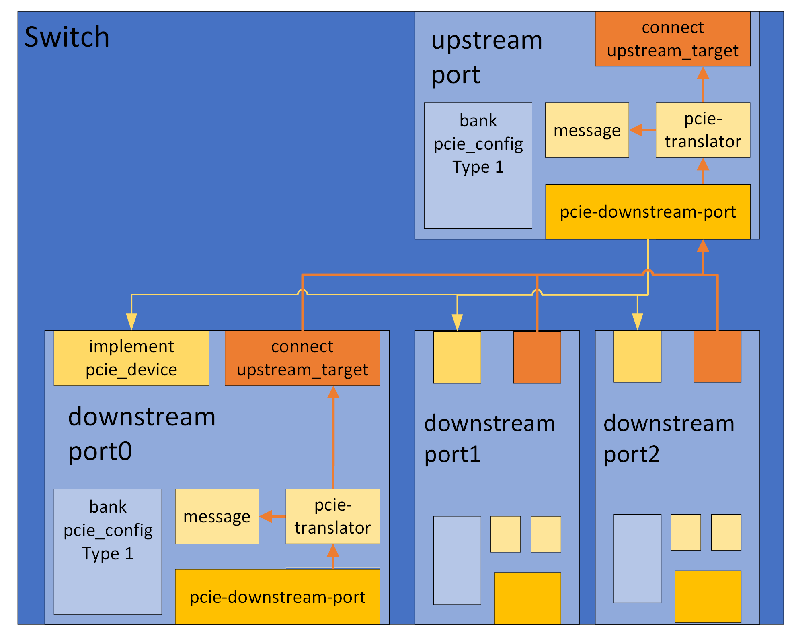
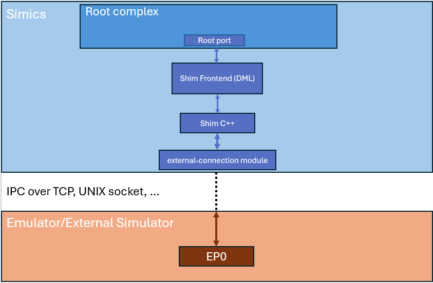

PCIe Modeling Library
Simics PCIe modeling library supports up to PCI Express Base
Specification Revision 6.0. Some of the features it supports with
little or no modeling effort are:
- Sending and receiving PCIe Messages
- Upstream and downstream I/O and Memory operations
- Legacy PCI Interrupts
- Message Signalled Interrupts (MSI)
- Message Signalled Interrupts X (MSI-X)
- Resizable BARs (RBAR)
- Virtual Function Resizable BARs (VFRBAR)
- Single Root I/O Virtualization (SR-IOV)
- Address Translation Service (ATS)
PCIe is simulated in Simics on a functional level, which means that
models typically operate slightly above the Transaction Layer. Simics
does not simulate individual TLPs, it simulates relevant parts of the
TLP and conveys the information along the route to the target
destination.
A Transaction Layer Package (TLP) in PCIe comes in four different
types: Config, Memory, I/O, and Message. All of these are issued using
the transaction_t data structure. The various bits of information
required to complete an operation (PASID, RequesterID, etc.) are
attached to the transaction_t as atoms.
To create a PCIe endpoint:
- Import
"pcie/common.dml"
- Add the template
pcie_endpoint to the top level of your device code.
- Set
init_val for the registers device_id and vendor_id in the
pcie_config bank.
- If your endpoint defines optional capabilities: set the
init_val of
the capabilities_ptr register and add capability templates for the
capabilities present.
- Create one or several banks that implement the application logic
present in your endpoint. These will be mapped by the Base Address
Register(s) created in the next step.
- Add Base Address registers present in your endpoint, using either the
memory_base_address_64 or the memory_base_address_32 template.
To map in the application logic is done by setting the map_obj
parameter to the banks you created in the previous step.
Sizing the BAR is done by setting the size_bits parameter
in the Base Address Register.
Figure 1. Simple Endpoint
dml 1.4;
device endpoint;
import "pcie/common.dml";
is pcie_endpoint;
bank pcie_config {
register vendor_id { param init_val = 0x8086; }
register device_id { param init_val = 0x4042; }
register bar0 @ 0x10 is memory_base_address_64 {
// 4k BAR allocation
param size_bits = 12;
param map_obj = app0.obj;
}
register bar2 @ 0x18 is memory_base_address_64 {
// 32 MB BAR allocation
param size_bits = 25;
param map_obj = app2.obj;
}
register capabilities_ptr {
// points to the base address of the first capability
param init_val = 0x40;
}
group ssid is ssid_capability {
param base = 0x40;
param next_ptr = 0x60;
register ssvid { param init_val = 0x8086; }
}
group msi is msi_capability {
param base = 0x60;
param next_ptr = 0x0;
param is_64bit_capable = true;
param is_pvm_capable = true;
param is_emd_capable = true;
param num_vectors = 2;
}
}
bank app0 {
// defines application logic tied to BAR0
register intr size 1 @ 0x0 is write {
method write(uint64 value) {
pcie_config.msi.raise(0); // raise MSI vector 0 on write
}
}
}
bank app2 {
// application logic tied to BAR2 goes here
}
To create a Multi-Function PCIe endpoint:
- Import
"pcie/common.dml"
- Add the template
pcie_multifunction_endpoint to the top level of your device code.
- Define one bank for each function in your endpoint, using the template
type_0_bank
- For each bank, apply the appropriate steps from section Endpoint
Figure 2. Simple Multi-Function Endpoint
dml 1.4;
device endpoint;
import "pcie/common.dml";
is pcie_multifunction_endpoint;
bank f0 is type_0_bank {
param function = 0;
register vendor_id { param init_val = 0x8086; }
register device_id { param init_val = 0x4042; }
register bar0 @ 0x10 is memory_base_address_64 {
// 32 MB BAR allocation
param size_bits = 25;
param map_obj = app0.obj;
}
register capabilities_ptr { param init_val = 0x40; }
group ssid is ssid_capability {
param base = 0x40;
param next_ptr = 0x60;
register ssvid { param init_val = 0x8086; }
}
group msi is msi_capability {
param base = 0x60;
param next_ptr = 0x0;
param is_64bit_capable = true;
param is_pvm_capable = true;
param is_emd_capable = true;
param num_vectors = 2;
}
}
bank f1 is type_0_bank {
param function = 1;
register vendor_id { param init_val = 0x8086; }
register device_id { param init_val = 0x4043; }
register bar0 @ 0x10 is memory_base_address_64 {
// 16 MB BAR allocation
param size_bits = 24;
param map_obj = app2.obj;
}
}
bank app0 {
// defines application logic tied to f0.BAR0
}
bank app2 {
// application logic tied to f1.BAR0 goes here
}
- Import
"pcie/common.dml"
- Create subdevices for your upstream and downstream ports, adding the template
pcie_downstream_port to the downstream ports and pcie_upstream_port to the
upstream port.
- Connect the downstream ports to the upstream port
- Set
init_val for the registers device_id and vendor_id in the
pcie_config bank of each subdevice.
- If your ports have additional capabilities: set
init_val of the
capabilities_ptr register and add capability templates for the
capabilities present.
- The prefetchable memory is by default 64-bit, one has to override
field
cap in registers bank_config.prefetchable.base and
bank_config.prefetchable.limit to make it 32-bit.
- If your switch implements application logic:
- Add e.g. banks that implement the registers that control this application
logic.
- Add Base Address registers using either the
memory_base_address_64
or the memory_base_address_32 template.
To map in the application logic is done by setting the map_obj
parameter to the banks you created in the previous step.
Sizing the BAR is done by setting the size_bits parameter
in the Base Address Register.
Here is a simple Switch example with one upstream port and four
downstream ports. The upstream port has MSI-X capability and built-in
application logic tied to BAR0:
Figure 3. Simple Switch
dml 1.4;
device pcie_switch;
import "pcie/common.dml";
subdevice usp "Upstream Port" {
is pcie_upstream_port;
bank pcie_config {
register vendor_id { param init_val = 0x8086; }
register device_id { param init_val = 0x4042; }
}
register bar0 @ 0x10 is memory_base_address_64 {
// 8 MB BAR allocation
param size_bits = 23;
param map_obj = app0.obj;
}
register capabilities_ptr { param init_val = 0x40; }
group msix is msix_capability {
param base = 0x40;
param next_ptr = 0x0;
param num_vectors = 32;
param table_offset_bir = 0x1000;
param pba_offset_bir = 0x5000;
param data_bank = msix_data;
}
}
subdevice dsp[i < 3] "Downstream Port" {
is pcie_downstream_port;
is post_init;
method post_init() {
// connect this port to the internal bus of the upstream port
// the second argument is the DeviceID, i.e. bus/device/function
// where the device-number is bits 7:3
pcie_device.connected(usp.downstream_port.obj, 1 << 3);
}
bank pcie_config {
register vendor_id { param init_val = 0x8086; }
register device_id { param init_val = 0x4043; }
}
}
bank app0 {
// application logic tied to BAR0 in the upstream port goes here
}
bank msix_data is msix_table; // storage for MSI-X table and pba
- Import
"pcie/common.dml"
- Apply the
pcie_bridge template to the top level of your device code.
- Create subdevices for your downstream ports, applying the template
pcie_root_port to all of them.
- Connect the downstream ports to the
downstream_port object created
by the pcie_bridge template.
- Set
init_val for the registers device_id and vendor_id in the
pcie_config bank of each downstream port.
- If your ports have additional capabilities: set
init_val of the
capabilities_ptr register and add capability templates for the
capabilities present.
- The prefetchable memory is by default 64-bit, one has to override
field
cap in registers bank_config.prefetchable.base and
bank_config.prefetchable.limit to make it 32-bit.
- If your Root Complex has integrated endpoints (RCiEPs) you can
implement these as subdevices in the RC, or as external devices. In
any case, they need to be connected to the
downstream_port of the
RC.
Here is an example root complex with one root port and two integrated
endpoints, one implemented directly in the code and one that is created
as a subobject, using another class:
Figure 4. Simple Root Complex
dml 1.4;
device root_complex;
param use_io_memory = true;
import "pcie/common.dml";
is pcie_bridge;
subdevice rp "PCIe Root Port" {
is pcie_root_port;
is post_init;
method post_init() {
// connect this port to the internal bus of the RC
// the second argument is the DeviceID, i.e. bus/device/function
// where the device-number is bits 7:3
pcie_device.connected(dev.downstream_port.obj, 0);
}
bank pcie_config {
register vendor_id { param init_val = 0x8086; }
register device_id { param init_val = 0x4043; }
register class_code { param init_val = 0x20000; }
}
}
subdevice iep_A "Integrated Endpoint A" {
is pcie_endpoint;
is hreset;
is post_init;
method post_init() {
// connect this integrated endpoint to the internal bus of the RC
// the second argument is the DeviceID, i.e. bus/device/function
// where the device-number is bits 7:3
pcie_device.connected(dev.downstream_port.obj, 1 << 3);
}
bank pcie_config {
register vendor_id { param init_val = 0x8086; }
register device_id { param init_val = 0x4044; }
register bar0 @ 0x10 is memory_base_address_64 {
param size_bits = 12;
param map_obj = app0.obj;
}
register capabilities_ptr { param init_val = 0x40; }
group msix is msix_capability {
param base = 0x40;
param next_ptr = 0x0;
param num_vectors = 32;
param table_offset_bir = 0x1000;
param pba_offset_bir = 0x5000;
param data_bank = msix_data;
}
}
bank app0 {
// application logic tied to BAR0 in the integrated endpoint goes here
}
bank msix_data is msix_table; // storage for MSI-X table and pba
}
connect iep_B "Integrated Endpoint B"{
is post_init;
is init_as_subobj;
param classname = "some_class";
interface pcie_device;
method post_init() {
// connect this integrated endpoint to the internal bus of the RC
// the second argument is the DeviceID, i.e. bus/device/function
// where the device-number is bits 7:3
pcie_device.connected(dev.downstream_port.obj, 2 << 3);
}
}
There are some sample PCIe devices distributed in Simics base. Currently, this
includes sample-pcie-device, which is a simple PCIe device with some
capabilities and a memory BAR mapped register bank. There is also the
standard-pcie-switch, which also has a component wrapper
standard-pcie-switch-comp. It's a switch with 4 downstream ports. All ports in
implement 3 capabilities. This switch can be used in any platform that supports
PCIe to provide the ability to expand the PCIe hierarchy.
This is a high-level description of how PCIe is implemented in
Simics. If you write your device in DML, most of the details below are
automatically handled by the DML templates.
The Simics PCIe modeling framework provides the ability to model
- Endpoints
- Multifunction Endpoints
- Root Complexes
- Switches
- Bridges
A PCIe device must implement the pcie_device interface. This
interface is used to indicate when the device is connected,
disconnected, and to signal a hot reset.
An RC, Switch or other bridges, must use helper-objects of the class
pcie-downstream-port to simulate the downstream port(s). Each port
facing downstream, i.e. each Virtual PCIe-PCIe bridge in the RC or
Switch (represented by a Type 1 Configuration Header), should have a
pcie-downstream-port. Each downstream port can connect to one or
several (external) PCIe devices. The upstream-facing port of a Switch
should have a pcie-downstream-port with the (internal) Virtual
PCIe-PCIe bridge(s) connected as devices. The below image illustrates
a sample PCIe hierarchy in Simics, yellow boxes represent
pcie-downstream-ports.
The pcie-downstream-port routes messages and manages the Config, IO
and Memory address spaces for its connected downstream devices. There
is a translator-port downstream which receives downstream
transactions and redirects them to the downstream devices connected to
it. There are also specialized translator-ports cfg, msg, io,
and mem which can be used to send transactions of their specific type.

The interface pcie_port_control is implemented by the
pcie-downstream-port, it is used by whoever owns the port to configure
it, and to signal hot reset. The pcie-downstream-port also implements
the pcie_map interface, which the Endpoints below it use to claim
ranges in the downstream address space (e.g. Memory and I/O BARs), and
add (virtual) functions. An endpoint starts an upstream transaction by
issuing it to its connected pcie-downstream-port
Endpoints issue upstream transactions through the pcie-downstream-port
object of the RC/Switch to which they are connected. The
pcie-downstream-port acts as a translator and will direct all upstream
transactions to its upstream_target, typically the host memory in
case of an RC, or the upstream target in case of a Switch.
Endpoints must add their functions and map other resources such as
Memory and I/O BARs (as configured in the relevant registers of the
Type 0 Configuration Header). This is done through the pcie_map
interface of the pcie-downstream-port object to which they are
connected.
Switches have an upstream port which is connected to the
pcie-downstream-port of either a Root Complex or another Switch. As
the downstream port(s) of the Switch are configured, they must map the
resources of these ports in the pcie-downstream-port of the RC/Switch
to which they are connected. For example, the Message and
Configuration range bounded by secondary and subordinate bus
registers, as well as the Memory and IO ranges bounded by base and
limit registers.
Simics provides a set of DML templates to assist in writing models for
PCIe compliant devices. The templates are available in
[simics]/src/devices/dml-lib/pcie/.
A typical endpoint device would use the pcie_endpoint
template. This template defines the pcie_config register bank which
simulates a Type 0 Configuration header. It also defines a connect for
the upstream target, implements the required interfaces, and handles the
mapping of resources defined in any base address registers.

The configuration header of a PCIe device is a register bank,
typically named pcie_config, which uses the template
physical_config_bank. A register bank would normally
not instantiate this template directly, but use either of
type_0_bank or type_1_bank instead. An
endpoint that uses the pcie_endpoint template automatically gets a
bank pcie_config which is an instance of the
type_0_bank template. All instances of
physical_config_bank will be mapped in the
configuration space of the upstream port when the device is connected,
and all base address registers in the bank will be mapped in the
appropriate address space, according to the type. If more than one
instance of physical_config_bank exists in the same device,
i.e. when simulating a multi-function-device, they must be separated
by assigning different values to the parameter function. Sample code
for a simple multi-function endpoint is available in the quick-start
Multi-Function Endpoint section.
The pcie_config bank defines the registers vendor_id, device_id
and class_code. An endpoint must assign init values for these,
according to the specification of the hardware that is to be
simulated. Sample code for setting Vendor ID, Device ID and Class Code
is available in the quick-start Endpoint section.
Depending on the device to be modeled, the init value for other
registers might also need to be customized.
PCIe defines optional "Capabilities" and "Extended
Capabilities". These are available as templates, configurable by
parameters. The templates are designed to be applied on groups, and
all templates require the parameters base and next_ptr to be
defined. The base parameter defines the address of the first
register in the capability structure. The next_ptr defines the base
address of the first address in the next capability structure (or zero
if this is the last capability). For example, the
Endpoint in the quick-start section has the
Subsystem ID (SSID) and Message Signaled Interrupts (MSI) capabilities
defined
Note that except where explicitly noted, the capability templates just
define the registers and fields from the PCIe specification. The
actual functionality must then be implemented by the device code. See
DML Template Reference for more details.
An endpoint typically defines at least one base address register. In
Simics these are declared by creating registers in the bank that
corresponds to the configuration header (typically pcie_config).
The base address registers must use one of the base address templates,
for example the memory_base_address_64. The
Endpoint in the quick-start section defines two
Memory Base Address registers, bar0 and bar2. Each of them is tied
to a register bank that will be mapped when the Memory Space Enable
bit in the Command register is written as '1'.
There are a number of different templates that can be used to simulate
base address registers, and they can be customized using various
parameters. These are described in the Common
Templates section of this document.
PCIe functions can send legacy interrupts using the
raise_legacy_interrupt and lower_legacy_interrupt methods in the
pcie_config bank. If the function has an MSI and/or MSI-X capability, it
can use the appropriate Capabilities template to implement this and
send message signalled interrupts by using the raise method in the
group using the msi_capability or msix_capability template. The
Endpoint in the quick-start section, for example,
has MSI capability and raises MSI vector 0 when the intr register in app0 is
written. If a function has both an MSI and an MSI-X capability, it's important
to either call the raise() method on both capabilities (if the capability is
disabled, it is a no-op), or use the enabled() method on both capabilities to
check which one is enabled before calling the applicable raise() method.
MSI-X is less straight forward compared to MSI. With MSI-X, there is the MSI-X
Table and the MSI-X PBA structure that both reside in BAR mapped memory space.
The library is able to handle all of this accordingly, but there is more
configuration needed compared to MSI where its simple to just instantiate the
MSI capability template and be done with it.
dml 1.4;
device msix_example_1;
import "pcie/common.dml";
is pcie_endpoint;
bank pcie_config {
register capabilities_ptr { param init_val = 0x40; }
// bar is a BAR register at position 1 since it is at offset 0x14
register bar @ 0x14 is (memory_base_address_64) { param size_bits = 12; }
is defining_msix_capability;
param msix_offset = 0x40;
param msix_next_ptr = 0;
param msix_num_vectors = 32;
// The Table and PBA params contains the BIR value at the 3 lower bits and
// the offset at the remaining 29 bits.
param msix_table_offset_bir = 1;
param msix_pba_offset_bir = ((0x10 * msix_num_vectors) << 3) | 1;
param msix_data_bank = msix_data;
}
// Internal representation of the MSI-X state
bank msix_data is msix_table {
param msix_bank = pcie_config;
}
Here we have an endpoint with one function that contains an MSI-X capability. We
have set the msix_table_offset_bir param to 1. This param represents the
values Table BIR and Table Offset in the MSI-X capability structure. Since Table
BIR becomes 1, and Table Offset also becomes 0, the MSI-X Table will end up in
the memory region mapped by bar (which is at position 1) at offset 0. With
msix_pba_offset_bir being ((0x10 * msix_num_vectors) << 3) | 1, with `(0x10
- msix_num_vectors)` being the size of the MSI-X Table, the PBA BIR is also 1,
but the offset makes the PBA start just after where the Table has ended (in the
same memory region). Few notes:
- The content of the
msix_data, which instantiates msix_table, should not
need any consideration by the user, since this is a library implementation
detail.
- An MSI-X interrupt would in this case have been raised using
pcie_config.msix.raise(<vector>).
- There must exist a BAR register definition in the bank where the
msix_capability is instantiated on an offset which is in line with the BIR
selection for both the Table and the PBA.
- The MSI-X Table and PBA must not necessarily reside on the same BAR mapped
memory-region.
- It is allowed for MSI-X Table and PBA to utilize an already occupied BAR as
per the PCIe specification. The library however only supports that data (which
is mapped by setting the
map_obj param in the BAR register definition) would
start at offset 0 of memory-region mapped by the BAR register. The MSI-X Table
and PBA can have any offset (as long as it does not overlap with valid access
points in the map_obj).
Simics PCIe uses the transaction_t data type for all
transactions. The config_bank template provides utility
methods for reading and writing to the PCIe memory space. These
methods reside in the group memory and operate on the
upstream_target. Details are available in the
Memory methods section of this document. Below is a
sample DML device which defines a method that reads 8 bytes from PCIe
memory and writes it back with all bits flipped.
Figure 5. Example memory reading and writing
dml 1.4;
device endpoint;
import "pcie/common.dml";
is pcie_endpoint;
method process_data(uint64 address) {
local (pcie_error_t err, uint64 value) = pcie_config.memory.read(addr, 8);
if (err != PCIE_Error_No_Error) {
log error: "failed to read PCIe memory @ 0x%x", address;
return;
}
err = pcie_config.memory.write(addr, ~value, 8);
if (err != PCIE_Error_No_Error)
log error: "failed to write PCIe memory @ 0x%x", address;
}
Just like for memory transactions, the config_bank
template defines a group message with utility methods for sending
and receiving messages. By default, the methods for receiving just log
an "unimpl" string and return false, indicating that the device did
not accept the message. Device code must override the methods for the
messages it wishes to service, and return true if the message is
accepted. As with the memory group, the methods for sending messages
operate on upstream_target.
Here is a sample DML device which accepts 'Vendor Defined Type 0'
messages and sends a 'Vendor Defined Type 1' message upstream, with
the address bits inverted. The available methods are described in more
detail in the Sending and
Receiving Messages sections.
Figure 6. Example sending and receiving messages
dml 1.4;
device endpoint;
import "pcie/common.dml";
is pcie_endpoint;
bank pcie_config {
// ...
group message {
method vendor_defined_type_0(transaction_t *t, uint64 addr) -> (bool) {
log info, 2: "VDM Type 0 received, address: 0x%x", addr;
local pcie_error_t err = message.send(
~addr, PCIE_Vendor_Defined_Type_1, PCIE_Msg_Route_Upstream);
return err == PCIE_Error_No_Error;
}
}
// ..
}
PCIe defines two types of resets: Conventional Reset and FLR (Function Level Reset)
Conventional Reset is divided into three categories: Cold, Warm and Hot
Cold reset in the PCIe library is the same as instantiating the PCIe device in Simics.
Warm reset is modelled in the library.
Hot reset is defined in the PCIe specification and is modelled. FLR is also modelled in the library.
Warm reset is modelled with the hard_reset templates and a HRESET signal port exists
trigger a warm reset externally. All registers go back to their initial state.
Hot reset is modelled with the soft_reset templates, (defined in DML Utilities), in the library.
In PCIe Hot reset is triggered by an inband signal.
In Simics the inband signal is modelled through the pcie_device
interface method hot_reset. When an upstream port triggers
this method a soft_reset is invoked on the PCIe device, resetting
each PCIe function below the object implementing the pcie_device
interface. Register fields inheriting template pcie_sticky
are not affected by a Hot reset. The library adds the template pcie_sticky
to all fields defined as sticky in the specification.
FLR only applies to Endpoints and is modelled with the pcie_function_level_reset templates
in the library. FLR operates on function level.
Firmware can reset individual functions in a multi function device by invoking FLR.
Each type_0_bank inherits template pcie_function_level_reset.
Firmware invokes an FLR by writing 1 to field bcre_iflr in the
Device Control Register or to field iflr in the Control register in the PCI AF capability.
An FLR is initiated by invoking method pcie_function_level_reset on the functions PCIe config bank.
It causes all FLR relevant fields to reset to their initial state and resets relevant states
within the PCIe device.
To add custom FLR logic to a model the user has to override the pcie_function_level_reset method
in the bank.
Figure 7. Example FLR implementation
dml 1.4;
device endpoint;
import "pcie/common.dml";
saved int my_function_state;
is pcie_endpoint;
bank pcie_config {
register capabilities_ptr {
param init_val = 0x40;
}
is defining_exp_capability;
param exp_offset = capabilities_ptr.init_val;
param exp_next_ptr = 0x0;
param exp_dp_type = PCIE_DP_Type_EP;
method pcie_function_level_reset() {
default();
log info, 2: "Resetting function";
my_function_state = 0;
}
}
To add custom reset logic that needs to be run for all PCIe resets: Warm, Hot and FLR,
one should utilize the pcie_after_reset method at the top of the PCIe config bank. It
will by default be invoked by all PCIe reset types.
Figure 8. Example adding custom reset logic invoked by all PCIe reset types.
dml 1.4;
device endpoint;
import "pcie/common.dml";
is pcie_endpoint;
bank pcie_config {
saved int state;
method pcie_after_reset() {
default();
log info, 2: "Resetting model";
state = 0;
}
}
The pcie_config bank has a parameter use_standard_access_templates that
defaults to true. When this parameter is set to true,
the library automatically adds templates read_only, hwinit and ignore_write
to registers and fields according to PCIe specification.
The hwinit template by default makes the field read-only. See
DML Template Reference for more details for the hwinit template.
The actual implementation of HwInit in vendor hardware implementations
varies because the PCIe specification states that the Hwinit behaviour is vendor
defined to a large extent. Therefore the HwInit behaviour in the lib can be tailored
to accommodate vendor functionality.
Here are a few examples of HwInit hardware behaviour which the library can model:
Figure 9. Example to allow firmware to write once to each hwinit field after hard reset or instantiation
dml 1.4;
device endpoint;
import "pcie/common.dml";
is pcie_endpoint;
bank pcie_config {
in each (hwinit) {
param writable_after_hreset = true;
}
}
Figure 10. Example where input signal controls writable access to hwinit fields
dml 1.4;
device endpoint;
import "pcie/common.dml";
is pcie_endpoint;
bank pcie_config {
in each (hwinit) {
param writable_once_only = false;
}
}
port hwinit_control_signal is signal_port {
implement signal {
method signal_raise() {
default();
pcie_config.unlock_hwinit_registers();
}
method signal_lower() {
default();
pcie_config.lock_hwinit_registers();
}
}
}
Figure 11. Example to disable hwinit behaviour entirely
dml 1.4;
device endpoint;
import "pcie/common.dml";
is pcie_endpoint;
bank pcie_config {
in each (hwinit) {
param writable_after_hreset = true;
param writable_once_only = false;
}
}
A PCIe device that is not an endpoint, i.e. a Root Port or a a Switch
Port, is simulated with the help of an object of the class
pcie-downstream-port.
A root or switch port would typically use the
pcie_root_port template. The pcie_root_port template
creates a port object downstream_port of the class
pcie-downstream-port and defines a bank pcie_config which is an
instance of the type_1_bank template. It also defines a
connect to an upstream target and provides default implementations for
the interface transaction_translator to handle upstream
transactions.
The type_1_bank template automatically handles the
standard base address registers for IO, Memory, and Prefetchable memory.
It maps the configured ranges in the appropriate address space of the
connected upstream target, forwarding them to its downstream
port. Here is an overview image of a sample RC with one root port and
one Root Complex Integrated Endpoint (RCiEP)

And here is an overview image of a sample Switch with one upstream and
three downstream ports.

The quick-start section contains sample code for creating a similar
Root Complex and Switch
The pcie_root_port automatically forwards all upstream traffic to
its upstream_target. A port that wishes to change that can either
redirect traffic of a certain type by setting any or all of the
parameters def, msg, mem, io, and cfg in the group txl to
a valid map target. Setting it to NULL will block upstream traffic
of that type. See the documentation for the
pcie_translator template for more information.
Messages can be handled by creating instances of the template
handling_messages in the upstream_message port. This port is
created automatically by the pcie_root_port template. See the
documentation for the handling_messages template for more
information. Here is an example that handles Vendor Defined Message
Type 0:
Figure 12. Example upstream message handling
dml 1.4;
device rp;
import "pcie/common.dml";
is pcie_root_port;
port upstream_message {
group vdm0 is handling_messages {
method message(transaction_t *t, uint64 addr,
pcie_message_type_t type) -> (pcie_error_t) {
if (type != PCIE_Vendor_Defined_Type_0) {
// message not handled here
return PCIE_Error_Not_Set;
}
log info: "VDM0 received";
return PCIE_Error_No_Error;
}
}
}
A device that wishes to bridge PCIe to/from host memory, without
necessarily being a Type 1 device, would use the pcie_bridge
template. Like pcie_root_port, the template creates a port object
downstream_port but it doesn't create any register bank and instead
of an upstream_target it has a connect host_memory to which it
translates requests.
Segment routing across PCIe hierarchies is supported in PCIe 6 and
the PCIe modeling library provides templates and methods to support it.
Segment routing consists of two parts:
- Configuring the segment number for each PCIe hierarchy within a Root Complex.
- Route messages upstream if destination segment does not match the source segment number.
The first part requires as per PCIe 6 specification that configuration requests
contain the segment number for the hierarchy. It is up to the root complex
to append ATOM_transaction_pcie_destination_segment atom to downstream
configuration requests. The PCIe library will capture this atom and store
its value internally. This is true for Root Ports, Switches and Endpoints.
For segment routing to work all relevant devices in the hierarchy must instantiate
the dev3_capability capability. For instance if an endpoint wants to route a message
to a target that is part of another PCIe hierarchy all upstream ports connecting
the endpoints to the Root Complex must have the dev3_capability instantiated.
The second part is handled automatically within the PCIe library up until the Root Complex.
But first the message initiator must setup the message transfer utilizing
the send_custom method. More details in the Sending
Message section.
Figure 13. Example sending message upstream with segment number
dml 1.4;
device endpoint;
import "pcie/common.dml";
is pcie_endpoint;
bank pcie_config {
// ...
is defining_dev3_capability;
param dev3_offset = 0x100;
param dev3_next_ptr = dev3_offset + 0x100;
// ..
method send_message(uint16 target_id, uint8 segment_number) {
local atom_t extra_atoms[2];
extra_atoms[0] = ATOM_pcie_destination_segment(segment_number);
extra_atoms[1] = ATOM_list_end(0);
local bytes_t data;
local pcie_error_t ret = message.send_custom(target_id << 48,
PCIE_Vendor_Defined_Type_0,
PCIE_Msg_Route_ID,
data,
extra_atoms);
}
}
Figure 14. Example of root complex with multiple PCIe segments supporting message routing across segments.
dml 1.4;
device root_complex;
import "utility.dml";
import "pcie/common.dml";
param pcie_version = 6.0;
param nbr_segments = 4;
group segment[segment_id < nbr_segments] {
subdevice bridge is pcie_bridge {
group txl_target {
param msg = dev.upstream_messages.map_target;
}
}
subdevice root_port is (pcie_root_port, post_init) {
bank pcie_config {
register capabilities_ptr {
param init_val = 0x40;
}
is defining_pm_capability;
param pm_offset = capabilities_ptr.init_val;
param pm_next_ptr = pm_offset + 0x10;
is defining_exp_capability;
param exp_offset = pm_next_ptr;
param exp_next_ptr = exp_offset + 0x30;
param exp_dp_type = PCIE_DP_Type_RP;
is defining_dev3_capability;
param dev3_offset = exp_next_ptr;
param dev3_next_ptr = dev3_offset + 0x100;
}
method post_init() {
pcie_device.connected(bridge.downstream_port.obj, 0);
}
}
}
port upstream_messages is (init_mt) {
implement transaction_translator {
method translate(uint64 addr,
access_t access,
transaction_t *t,
exception_type_t (*callback)(translation_t txl,
transaction_t *tx,
cbdata_call_t cbd),
cbdata_register_t cbdata) -> (exception_type_t) default {
local pcie_msg_route_t route =
ATOM_get_transaction_pcie_msg_route(t);
local const uint8* seg_id =
ATOM_transaction_pcie_destination_segment(t);
local translation_t txl;
switch (route) {
case PCIE_Msg_Route_ID:
if (seg_id != NULL && *seg_id < nbr_segments) {
txl.target = segment[*seg_id].bridge.downstream_port.map_target;
}
break;
case PCIE_Msg_Route_Upstream:
txl.target = dev.message.map_target;
break;
default:
log error: "%s, Unexpected pcie routing type: %d", this.qname, route;
return Sim_PE_IO_Not_Taken;
}
if (txl.target) {
log info, 2:
"Forwarding messages: %s, %s, segment=%d, address=0x%x, to: %s",
pcie_message_type_name(ATOM_get_transaction_pcie_msg_type(t)),
pcie_route_type_name(ATOM_get_transaction_pcie_msg_route(t)),
*seg_id,
addr,
SIM_object_name(SIM_map_target_object(txl.target));
}
return callback(txl, t, cbdata);
}
}
}
port message is (message_port);
Note! As of PCIe 6.1, DOE protocols are now referred to as DOE features.
Data Object Exchange (DOE) is supported and can be implemented in a device using
the doe_capability template. This template by default implements DOE Discovery
protocol. New protocols can be added easily by adding entries in the doe group
of the doe_capability. The DOE Discovery protocol implementation will detect
and report those accordingly with no modifications to the DOE Discovery
implementation. Below is an example of implementing DOE in a PCIe device with a
custom DOE protocol.
Figure 15. Example of device with DOE and a custom DOE protocol
dml 1.4;
device endpoint;
import "pcie/common.dml";
is pcie_endpoint;
bank pcie_config {
register capabilities_ptr { param init_val = 0x40; }
is defining_doe_capability;
param doe_offset = 0x40;
param doe_next_ptr = doe_offset + 0x100;
param doe_mailbox_len = 50;
param doe_interrupt_support = true;
group doe {
group protocols {
group test_protocol is doe_test_protocol {}
}
}
}
template doe_test_protocol is doe_protocol {
param vendor_id = 0x00FF;
param data_object_type = 1;
method handle_request(const uint32 *req, uint18 req_len) {
local uint32 res[3];
local doe_header_t res_header;
res_header.vendor_id = vendor_id;
res_header.data_object_type = data_object_type;
res_header.length = 3;
memcpy(res, &res_header, sizeof(res_header));
res[2] = 0xABCDEF;
try {
mailbox.push_buffer(res, sizeof(res) / sizeof(res[0]));
response_ready(sizeof(res) / sizeof(res[0]));
} catch {
response_error();
}
}
}
Pushing the response can be done with either the push or the push_buffer
methods of the mailbox. Each handling of a data object must conclude with
either a response_ready(res_len) or response_error() invocation.
The template pcie_phy adds a port to a device with the name phy. This is
intended to be used as a target for transactions which are related to the
physical layer in PCIe. The current default transaction handler in this port
handles transactions that contain the pcie_link_negotiation atom. It will try
to do link training by comparing the incoming max speed/width with its own max
speed/width and let the transaction initiator know the maximum common value of
the respective property. This is essentially a simplification of the T1 and T2
ordered sets that are actually communicated in a real PCIe link. Transactions in
this layer are expected to have a BDF in address[31:16]. The bus number is
unused as the transactions only traverse over one link. The function is
currently also unused as the transaction will end up in the top-level of a
device.
Take the standard PCIe switch distributed as part of Simics Base. It indicates
support of link speeds and widths using extended capability structures.
Additionally, the supported values have been set in the link registers of the
PCI Express Capability Structure. It also supports Hot-Plug along with having
an attention button and a power indicator. The latter two are useful for
Hot-Plug removal and software reporting status of Hot-Plug operations. Support
for these features are enabled using params found in the exp_capability and
exp_slot templates. This will result in the device emitting interrupts for
Slot and Link related events if software has enabled it. In the case where
interrupts might be generated by firmware in the device rather by hardware in
the device, shared methods found in the exp_slot template can be overridden to
fit a certain use case.
Figure 16. PCIe Switch supporting Hot-Plug and Link Training
dml 1.4;
device standard_pcie_switch;
param classname = "standard-pcie-switch";
param desc = "standard PCIe switch";
param documentation = "A standard PCIe switch with 4 downstream slots that"
+ " contains the mandatory capabilities for a PCIe"
+ " function in all ports.";
import "pcie/common.dml";
param pcie_version = 6.0;
template switch_port is pcie_port {
bank pcie_config {
register device_id { param init_val = 0x0370; }
register vendor_id { param init_val = 0x8086; }
register capabilities_ptr { param init_val = 0x40; }
register bar0 @ 0x10 is (memory_base_address_64) {
param size_bits = 14;
}
is defining_pm_capability;
param pm_offset = capabilities_ptr.init_val;
param pm_next_ptr = pm_offset + 0x08;
is defining_msix_capability;
param msix_offset = pm_next_ptr;
param msix_next_ptr = msix_offset + 0x0C;
param msix_num_vectors = 32;
param msix_table_offset_bir = 0;
param msix_pba_offset_bir = (0x10 * msix_num_vectors) << 3;
param msix_data_bank = msix_data;
is defining_exp_capability;
param exp_offset = msix_next_ptr;
param exp_next_ptr = 0x0;
group exp {
param has_links = true;
group link {
param max_link_speed = PCIE_Link_Speed_32;
param max_link_width = PCIE_Link_Width_x8;
}
}
is defining_dlf_capability;
param dlf_offset = 0x100;
param dlf_next_ptr = dlf_offset + 0x0C;
is defining_pl16g_capability;
param pl16g_offset = dlf_next_ptr;
param pl16g_next_ptr = pl16g_offset + 0x28;
param pl16g_max_link_width = PCIE_Link_Width_x8;
param pl16g_max_lanes = PCIE_Link_Width_x8;
is defining_pl32g_capability;
param pl32g_offset = pl16g_next_ptr;
param pl32g_next_ptr = 0;
param pl32g_max_lanes = PCIE_Link_Width_x8;
}
bank msix_data is msix_table {
param msix_bank = pcie_config;
}
}
subdevice usp is (pcie_upstream_port, switch_port) {
bank pcie_config {
param exp_dp_type = PCIE_DP_Type_UP;
}
}
subdevice dsp[i < 4] is (pcie_downstream_port, pcie_link_training,
switch_port, post_init) {
bank pcie_config {
param exp_dp_type = PCIE_DP_Type_DP;
group exp {
param has_hotplug_capable_slot = true;
param has_attention_button_slot = true;
group slot {
param has_power_indicator = true;
}
}
}
method post_init() {
pcie_device.connected(usp.downstream_port.obj, i << 3);
}
}
Note that the downstream ports also have to instantiate the template
pcie_link_training for link training support. This will ensure that when a
device is connected, link training will be initiated to the device on the other
side of the link. For link training to be successful, the device on the other
side of the link also has to have a function(s) that contain link attributes in
their PCIe Express Capability Structure (for example by setting the params
max_link_speed and max_link_width in the link group) as done for the switch
in the example above.
There are 3 (in-band) error signaling mechanisms defined in the PCIe
specification:
- Completion status
- Error messages
- Error forwarding / data poisoning
The PCIe library has support for the first two mechanisms to various degrees (as
discussed below).
A completion packet in PCIe includes a completion status field in the its
header. This is implemented in the library as an atom pcie_error_ret. The
library sets this in some occasions when handling a request, but it can also be
set by the user of the library in applicable contexts. The requester is then
able to inspect the pcie_error_ret atom to determine if the request was
successful or not.
Error messages are messages sent by functions in the PCIe hierarchy that
encounter errors (device specific internal errors or errors defined in the PCIe
specification) to the Root Complex (more specifically the applicable root port).
These messages could also be sent by root complex integrated endpoints, where
they instead would be sent to a Root Complex Event Collector (RCEC) if implemented.
Note that the library currently has no functional support for Error Messages
being collected by an RCEC.
PCIe functions may utilize the emit_errors group in the config_bank to
submit errors using either emit_errors.submit_correctable_error(),
emit_errors.submit_uncorrectable_error() or
emit_errors.submit_uncorrectable_error_advisory_non_fatal(). The library will
then set the applicable status bits in the PCI configuration header as well as
in the PCI Express Capability Structure. It will however currently not set
applicable AER bits and will not consider applicable AER mask and severity bits.
Disregarding AER, if software otherwise has configured the device to send error
messages for an error type, the library will send these messages automatically.
Root ports (that have instantiated pcie_root_port) may instantiate the
handling_err_messages template in their local message target port (by default
the upstream_message port in root port). In this instantiation, the
handle_error_message() method can be implemented to handle incoming error
signaling messages coming from downstream functions.
The ATS capability is modelled with template ats_capability.
See chapter Extended Capabilities templates
for the template and its methods definitions.
Template ats_upstream_translator shall be used for Root Complexes
to handle upstream ATS transactions. See chapter Bridge and Type 1 templates
for the template and its method definitions.
Translation requests and completions are modelled as a Simics read transaction with a payload.
The transaction contains the following atoms to represent request and completion:
ATOM_pcie_atATOM_pcie_byte_count_retATOM_pcie_ats_translation_request_cxl_srcATOM_pcie_ats_translation_request_no_writeATOM_pcie_pasid
ATOM_pcie_at shall be set to PCIE_AT_Translation_Request.
ATOM_pcie_byte_count_ret shall be set by TA to present how many valid
completion entries it has filled into the read payload. ATOM_pcie_byte_count_ret
is set to 4 * the number of valid completion entries.
The transaction payload consists of one or more entries of type
pcie_ats_translation_completion_entry_t to be filled in by the Translation Agent.
ATC Endpoints can use the translation_request method in template ats_capability to
issue an Address Translation Request.
Root complexes shall override the default issue method on port ats_request
to implement the Translation Request logic.
Invalidations are modelled with two PCIe messages represented by two Simics write transactions:
PCIE_ATS_Invalidate (Invalidation Request Message)PCIE_ATS_Invalidate_Completion (Invalidation Completion Message)
The invalidation request message consists of the following atoms together with a payload:
ATOM_pcie_ats_invalidate_request_itagATOM_pcie_pasid
The payload is of type pcie_ats_invalidate_request_payload_t and has the same content
as the message body in the PCIe specification.
The Root Complex can use method ats_invalidate, defined in template ats_upstream_translator,
to send an ATS invalidation request message.
When the ATC endpoint receives the invalidation request method, invalidate_received,
in template ats_capability will be called. The device model has to override the default
method and add the required logic to handle the invalidation.
The ATC endpoint can use method invalidate_complete in template ats_capability
to send the invalidation completion message back to the TA.
The Root Complex can instantiate template handling_ats_messages to start accepting
ATS invalidate completion messages. It has to override method
ats_invalidate_completion to include its invalidation completion logic.
The instantiation of template handling_ats_messages
has to be done under the port that inherits the message_port template.
For Root Complexes inheriting template pcie_bridge the port is defined
as port message. See chapter Bridge and Type 1 templates
for definitions of these templates.
ATS translated/untranslated request uses ATOM_pcie_at and shall
be set to either PCIE_AT_Translated or PCIE_AT_Untranslated.
For endpoints doing DMA, methods: memory_write_bytes and memory_read_buf
in template ats_capability can be used to easily construct AT memory requests.
For Root Complexes ports ats_translated and ats_untranslated
defined in template ats_upstream_translator receives all incoming
AT memory requests. The device model has to override the default implementations
of these ports to achieve the desired behaviour.
The Page Request Services are modelled with the following atoms:
ATOM_pcie_prs_page_requestATOM_pcie_prs_page_group_responseATOM_pcie_prs_stop_markerATOM_pcie_pasid
ATOM_pcie_prs_page_request is of data type pcie_prs_page_request_t.
ATOM_pcie_prs_page_group_response is of data type pcie_prs_page_group_response_t
and its response codes are listed in enum pcie_prs_response_code_t. ATOM_pcie_prs_stop_marker is just a bool.
The Root Complex can instantiate template handling_prs_messages to start accepting
PRS Request Page and PRS Stop Marker messages. It has to override method
page_request_receive to include the logic to manage Page Request and Stop Marker
messages. The instantiation of template handling_prs_messages
has to be done under the port that inherits the message_port template.
For Root Complexes inheriting template pcie_bridge the port is defined
as port message. See chapter Bridge and Type 1 templates
for definitions of these templates. The Root Complex can respond to the
Page requests by using method page_group_response which is part of template
handling_prs_messages.
For Endpoints template prs_capability instantiates all PRS logic and registers
provided by the PCIe library. See chapter Extended Capabilities templates
for the template and its methods definitions.
Figure 17. Example of DMA Endpoint.
dml 1.4;
device sample_pcie_ats_prs_dma;
param classname = "sample-pcie-ats-prs-dma";
param desc = "sample PCIe Endpoint utilizing ATS and PRS for DMA";
param documentation = "DMA endpoint with eight concurrent channels."
+ " Each DMA channel starts with allocating the necessary pages"
+ " using PRS. The DMA then performs an ATS translation followed"
+ " by the actual DMA operating on the translated addresses."
+ " After the DMA is finished it issues a stop marker message to the TA"
+ " to free up the pages.";
param pcie_version = 6.0;
import "pcie/common.dml";
is pcie_endpoint;
param NBR_CHANNELS = 8;
method umin(uint64 a, uint64 b) -> (uint64) {
return a < b ? a : b;
}
connect device_memory is (map_target) {
param documentation = "Memory in device endpoint";
param configuration = "required";
}
connect irq_dma_done[i < NBR_CHANNELS] is signal_connect {
param documentation = "Interrupt signal raised by DMA channel"
+ " when it is finished";
}
bank pcie_config {
register capabilities_ptr {
param init_val = 0x40;
}
is defining_pm_capability;
param pm_offset = capabilities_ptr.init_val;
param pm_next_ptr = pm_offset + 0x10;
is defining_exp_capability;
param exp_offset = pm_next_ptr;
param exp_next_ptr = 0x0;
param exp_dp_type = PCIE_DP_Type_EP;
is defining_ats_capability;
param ats_offset = 0x100;
param ats_next_ptr = ats_offset + 0x100;
is defining_pasid_capability;
param pasid_offset = ats_next_ptr;
param pasid_next_ptr = pasid_offset + 0x20;
group pasid {
register capability {
field trwps { param init_val = 1; }
// pasid in range 0 - 0xfffff
field mpw { param init_val = 0x14; }
}
}
is defining_prs_capability;
param prs_offset = pasid_next_ptr;
param prs_next_ptr = 0;
group prs {
register status {
field pasid { param init_val = 1; }
}
method page_response_received(transaction_t *t,
uint64 addr) -> (bool) {
if (ATOM_transaction_pcie_prs_page_group_response(t) != NULL
&& ATOM_transaction_pcie_pasid(t) != NULL) {
local pcie_prs_page_group_response_t msg = {
.u16 = ATOM_get_transaction_pcie_prs_page_group_response(t),
...
};
local pcie_pasid_info_t pasid = {
.u32 = ATOM_get_transaction_pcie_pasid(t),
...
};
for (local int i = 0; i < dma.len; i++)
if (dma[i].prs_page_response(msg, pasid))
return true;
return false;
} else {
log error:
"%s, Expected atoms pcie_prs_page_group_response"
+ " and pcie_pasid", this.qname;
return false;
}
}
}
}
bank regs {
param register_size = 8;
group channel[i < NBR_CHANNELS ] {
register dma_dev @ 0x0 + i * 0x30 {
field addr @ [63:12] "64-bit device address for DMA";
}
register dma_host @ 0x8 + i * 0x30 {
field addr @ [63:12] "64-bit host address for DMA";
}
register dma_len @ 0x10 + i * 0x30 {
param documentation = "Max 64k for single DMA transfer";
field len @ [15:0];
}
register dma_start @ 0x18 + i * 0x30 {
field start @ [31] "Start DMA" {
is write;
method write(uint64 value) {
if (value == 1) {
if (dma_status.busy.get() != 0) {
log spec_viol: "Cannot start DMA while busy!";
return;
}
local uint64 haddr = dma_host.addr.val << 12;
local int lsbit = pcie_config.ats.control.stu.lsbit();
if (haddr[lsbit - 1:0] != 0) {
log spec_viol:
"DMA host address must be ATS STU aligned";
return;
}
dma[i].start(haddr,
dma_dev.addr.val << 12,
dma_len.len.val,
pasid.pasid.val,
rnw.val ? true : false);
}
}
}
field rnw @ [0] "DMA Read from host = 1, Write to host = 0";
}
register dma_status @ 0x20 + i * 0x30 {
field busy @ [0] "DMA is busy with ongoing transfer" {
is (read, get);
method read() -> (uint64) {
return get();
}
method get() -> (uint64) {
return dma[i].pending ? 1 : 0;
}
}
}
register pasid @ 0x28 + i * 0x30 {
field pasid @ [19:0] "PASID to be used for DMA transfer";
}
}
}
group dma[n < NBR_CHANNELS] {
saved bool pending;
saved uint64 host_addr;
saved uint64 dev_addr;
saved uint32 size;
saved bool is_read;
saved uint20 pasid;
method start(uint64 host_addr,
uint64 dev_addr,
uint32 size,
uint20 pasid_value,
bool is_read) {
assert(!pending);
this.pending = true;
this.host_addr = host_addr;
this.dev_addr = dev_addr;
this.size = size;
this.is_read = is_read;
this.pasid = pasid_value;
this.request_pages();
}
method request_pages() {
local int nbr_stus =
pcie_config.ats.translation_size_to_entries(size);
local uint64 stu_size = pcie_config.ats.control.stu.size();
local int nbr_pages = nbr_stus * stu_size / 4096;
for (local int i = 0; i < nbr_pages; i++) {
local pcie_prs_page_request_t request = {
.field = {
.r = is_read ? 1 : 0,
.w = is_read ? 0 : 1,
.l = i == (nbr_pages - 1) ? 1 : 0,
.prgi = n,
.page_addr = (this.host_addr + (i * 4096)) >> 12,
},
...
};
local pcie_pasid_info_t p = { .field = { .pasid = this.pasid, ...}, ...};
local pcie_error_t ret = pcie_config.prs.page_request(request, &p);
if (ret != PCIE_Error_No_Error) {
log error:
"%s PRS request denied %s", this.qname, pcie_error_name(ret);
return;
}
}
}
method prs_page_response(pcie_prs_page_group_response_t msg,
pcie_pasid_info_t p) -> (bool) {
if (!this.pending)
return false;
if (p.field.pasid == this.pasid && msg.field.prgi == n) {
if (msg.field.response_code == PCIE_PRS_Response_Success) {
after: try_ats_and_dma();
} else {
log info, 1: "Page response indicated error: %s",
pcie_config.prs.response_code_name(msg.field.response_code);
this.pending = false;
}
return true;
} else {
return false;
}
}
method try_ats_and_dma() {
local int nbr_entries =
pcie_config.ats.translation_size_to_entries(size);
local pcie_ats_translation_completion_entry_t entries[nbr_entries];
local bool no_write = is_read;
// For the DMA the PRS operate on page size, having an STU
// greater than 4096 can lead to the follow up ATS request
// to be shifted to align with STU, thus pages not allocated by PRS
// can here be requested which is not desired. To prevent this
// the DMA must align its host address to STU to ensure 1:1 mapping
// between PRS requests and ATS translation requests
local int stu_lsb = pcie_config.ats.control.stu.lsbit();
assert(host_addr[stu_lsb - 1:0] == 0);
local pcie_pasid_info_t p = { .field = { .pasid = this.pasid, ...}, ...};
local pcie_error_t ret;
local int valid_entries;
(ret, valid_entries) =
pcie_config.ats.translation_request(host_addr,
entries,
nbr_entries,
&p,
no_write,
false);
if (ret != PCIE_Error_No_Error) {
log error:
"%s ATS request denied %s", this.qname, pcie_error_name(ret);
return;
}
for (local int i = 0; i < valid_entries; i++) {
local (uint64 translated_addr, uint64 txl_size) =
pcie_config.ats.get_translation_range(entries[i]);
local uint64 dma_size = umin(txl_size, this.size);
try {
do_dma(translated_addr, dev_addr, dma_size, is_read);
} catch {
log error:
"DMA %s failed for ATS address 0x%08X, device address: 0x%08X",
is_read ? "Read" : "Write", translated_addr, dev_addr;
return;
}
this.size -= dma_size;
this.dev_addr += dma_size;
}
assert(this.size == 0);
free_pages();
this.pending = false;
irq_dma_done[n].set_level(1);
irq_dma_done[n].set_level(0);
}
method do_dma(uint64 translated_addr,
uint64 dev_addr,
uint32 size,
bool is_read) throws {
if (is_read)
dma_read(translated_addr, dev_addr, size);
else
dma_write(translated_addr, dev_addr, size);
}
method dma_write(uint64 translated_addr,
uint64 dev_addr,
uint32 size) throws {
local uint8 data[size];
local bytes_t buf = { .data = data, . len = size };
device_memory.read_bytes(dev_addr, size, data);
local pcie_pasid_info_t p = { .field = { .pasid = this.pasid, ...}, ...};
local pcie_error_t ret;
ret = pcie_config.ats.memory_write_bytes(buf,
translated_addr,
PCIE_AT_Translated,
&p);
if (ret != PCIE_Error_No_Error)
throw;
}
method dma_read(uint64 translated_addr,
uint64 dev_addr,
uint32 size) throws {
local uint8 data[size];
local buffer_t buf = { .data = data, . len = size };
local pcie_pasid_info_t p = { .field = { .pasid = this.pasid, ...}, ...};
local pcie_error_t ret;
ret = pcie_config.ats.memory_read_buf(buf,
translated_addr,
PCIE_AT_Translated,
&p);
if (ret != PCIE_Error_No_Error)
throw;
device_memory.write_bytes(dev_addr, size, data);
}
method free_pages() {
local pcie_pasid_info_t p = { .field = { .pasid = this.pasid, ...}, ...};
local pcie_error_t ret = pcie_config.prs.send_stop_marker(&p);
if (ret != PCIE_Error_No_Error) {
log error: "Failed to free pages for PASID %d: %s",
p.u32, pcie_error_name(ret);
}
}
}
The sample device below implements an ATC using the ATS framework in
the library. Port device_memory_request handles incoming untranslated
transactions from the device and forwards them ATS translated upstream.
Implemented features:
- Internal
cache to store previous ATS translation completions.
- Different access rights for read/write/execute transactions.
- Any STU size set by the ATS capability control register (
pcie_config.ats.control).
- Translations consisting of multiple STUs and completion entries.
- Contiguous virtual address space mapped to separate physical STUs.
- ATS Translation Invalidation
- Checkpointing
- PASID
Note: Current implementation does not support checkpointing of deferred transactions.
Example use cases:
- Endpoint Device with DMA
- Accelerator accessing host memory
Figure 18. Example of Endpoint Implementing an Address Translation Cache.
dml 1.4;
device sample_pcie_ats_endpoint;
param classname = "sample-pcie-ats-endpoint";
param desc = "sample PCIe Endpoint with an ATS Cache";
param pcie_version = 6.0;
import "simics/util/interval-set.dml";
import "pcie/common.dml";
is pcie_endpoint;
attribute PASID is (uint64_attr);
method umax(uint64 a, uint64 b) -> (uint64) {
return a > b ? a : b;
}
bank pcie_config {
register capabilities_ptr {
param init_val = 0x40;
}
is defining_pm_capability;
param pm_offset = capabilities_ptr.init_val;
param pm_next_ptr = pm_offset + 0x10;
is defining_exp_capability;
param exp_offset = pm_next_ptr;
param exp_next_ptr = 0x0;
param exp_dp_type = PCIE_DP_Type_EP;
is defining_ats_capability;
param ats_offset = 0x100;
param ats_next_ptr = ats_offset + 0x100;
group ats {
// Method called by PCIe library when an invalidation request message
// is received for Translation Agent.
method invalidate_received(transaction_t *t,
uint64 dev_addr) -> (bool) {
local pcie_ats_invalidate_request_payload_t payload;
payload.u64 = SIM_get_transaction_value_le(t);
local uint8 itag = ATOM_get_transaction_pcie_ats_invalidate_request_itag(t);
local uint16 requester_id =
ATOM_get_transaction_pcie_requester_id(t);
local (uint64 addr, uint64 size) = this.get_invalidation_range(payload);
cache.evict(addr, size);
// Must inform Simics core the translation has been revoked.
// Look at documentation for SIM_translation_changed
// for more details.
SIM_translation_changed(device_memory_request.obj);
after: this.respond(requester_id, 1 << itag);
return true;
}
method respond(uint16 requester_id, uint32 itag_vector) {
// Calls helper method in PCIe lib to send Invalidation Completion
// message to Translation Agent.
local pcie_error_t ret = this.invalidate_complete(requester_id, itag_vector);
if (ret != PCIE_Error_No_Error) {
log error: "%s failed: %s",
pcie_message_type_name(PCIE_ATS_Invalidate_Completion),
pcie_error_name(ret);
}
}
}
is defining_pasid_capability;
param pasid_offset = ats_next_ptr;
param pasid_next_ptr = 0;
group pasid {
register capability {
field eps { param init_val = 1; }
field pms { param init_val = 1; }
field trwps { param init_val = 1; }
// pasid in range 0 - 0xffff
field mpw { param init_val = 0x10; }
}
}
}
// The endpoint device uses this port to handle untranslated memory requests
// which the ATC tries to convert to a translated memory request
// before forwarding the transaction upstream.
port device_memory_request {
implement transaction_translator {
method translate(uint64 addr,
access_t access,
transaction_t *prev,
exception_type_t (*callback)(translation_t txl,
transaction_t *tx,
cbdata_call_t cbd),
cbdata_register_t cbdata) -> (exception_type_t) {
local translation_t txl;
local bool hit;
local (uint64 base, uint64 start, uint64 size);
local pcie_ats_translation_completion_entry_t te;
(hit, base, start, size, te) = lookup_address(addr, prev, access);
txl.base = base;
txl.start = start;
txl.size = size;
if (!hit) {
assert(txl.base == txl.start);
log info, 4:
"Missed translation in range 0x%08X-0x%08X access=0x%x",
txl.base, txl.base + txl.size - 1, access;
return callback(txl, prev, cbdata);
}
local transaction_t t;
local bool add_pasid;
local pcie_pasid_info_t pasid;
// AT translated requests are only allowed if field trwpe is set
// Untranslated does not require that bit
if (pcie_config.pasid.control.pe.val == 1 &&
(te.field.u == 1 || pcie_config.pasid.control.trwpe.val == 1)) {
add_pasid = true;
pasid.field.pasid = PASID.val;
pasid.field.exe = (access & Sim_Access_Execute) != 0 ? 1 : 0;
}
local atom_t atoms[5] = {
ATOM_pcie_type(PCIE_Type_Mem),
ATOM_pcie_requester_id(pcie_config.get_device_id()),
ATOM_pcie_at(te.field.u == 1 ? PCIE_AT_Untranslated : PCIE_AT_Translated),
add_pasid ? ATOM_pcie_pasid(pasid.u32) : ATOM_list_end(0),
ATOM_list_end(0),
};
t.prev = prev;
t.atoms = atoms;
txl.target = upstream_target.map_target;
log info, 3: "Translating range 0x%08X-0x%08X to 0x%08X-0x%08X",
txl.base, txl.base + txl.size - 1,
txl.start, txl.start + txl.size - 1;
return callback(txl, &t, cbdata);
}
}
}
// Sends ATS request to Translation Agent.
// Utilizes several helper methods defined in the ATS capability template.
method do_ats_request(uint64 addr,
uint64 size,
access_t access) -> (exception_type_t) {
local uint64 atc_size = size + addr[11:0];
local int nbr_entries =
pcie_config.ats.translation_size_to_entries(atc_size);
local pcie_ats_translation_completion_entry_t entries[nbr_entries];
local bool no_write = (access & Sim_Access_Write) == 0;
local pcie_error_t ret;
local int valid_entries;
local int stu_lsb = pcie_config.ats.control.stu.lsbit();
local uint64 base_addr = addr[63:stu_lsb] << stu_lsb;
local bool add_pasid;
local pcie_pasid_info_t pasid;
if (pcie_config.pasid.control.pe.val) {
add_pasid = true;
pasid.field.pasid = PASID.val;
if (pcie_config.pasid.control.epe.val)
pasid.field.exe = (access & Sim_Access_Execute) != 0 ? 1 : 0;
}
(ret, valid_entries) = pcie_config.ats.translation_request(base_addr,
entries,
nbr_entries,
add_pasid ? &pasid : NULL,
no_write,
false);
switch(ret) {
case PCIE_Error_No_Error:
for (local int i = 0; i < valid_entries; i++) {
local (uint64 start, uint64 txl_size) =
pcie_config.ats.get_translation_range(entries[i]);
cache.insert(base_addr, txl_size, entries[i]);
base_addr += txl_size;
}
return Sim_PE_No_Exception;
case PCIE_Error_Unsupported_Request:
log info, 1:
"%s ATS request denied %s",
this.qname, pcie_error_name(ret);
return Sim_PE_IO_Not_Taken;
default:
log error:
"%s error in ATS translation request %s",
this.qname, pcie_error_name(ret);
return Sim_PE_IO_Not_Taken;
}
}
// Check internal AT Cache for translation, otherwise
// it tries to do an ATS request followed by a second cache lookup.
method lookup_address(uint64 addr, transaction_t *t, access_t access) ->
(
bool, // Hit
uint64, // Base
uint64, // Translated address
uint64, // size
pcie_ats_translation_completion_entry_t // TA completion entry
) {
local uint64 lookup_size = umax(SIM_transaction_size(t),
pcie_config.ats.control.stu.size());
local (bool hit,
uint64 base,
uint64 start,
uint64 size,
pcie_ats_translation_completion_entry_t te) = cache.lookup(addr, access);
if (!hit) { // Try do an AT request
if (SIM_transaction_is_inquiry(t))
return (false, base, start, size, te);
local exception_type_t v = do_ats_request(addr, lookup_size, access);
if (v != Sim_PE_No_Exception)
return (false, base, start, size, te);
(hit, base, start, size, te) = cache.lookup(addr, access);
assert(hit);
}
return (true, base, start, size, te);
}
// Sample cache to showcase basics for implementing ATS with the PCIe library.
// Utilizes the interval library in Simics core.
group cache is (init) {
session interval_set_t map;
method init() {
init_interval(&map, 1);
}
attribute storage {
param documentation = "Attribute to support checkpointing of the AT Cache";
param type = "[[iii]*]";
param internal = true;
method set(attr_value_t value) throws {
for (local int i = 0; i < SIM_attr_list_size(value); ++i) {
local attr_value_t it = SIM_attr_list_item(value, i);
local uint64 start = SIM_attr_integer(SIM_attr_list_item(it, 0));
local uint64 end = SIM_attr_integer(SIM_attr_list_item(it, 1));
local pcie_ats_translation_completion_entry_t e = {
.u64 = SIM_attr_integer(SIM_attr_list_item(it, 2)),
...
};
insert_interval(&map, start, end, cast(e.u64, void *));
}
}
method get() -> (attr_value_t) {
local attr_value_t map_list = SIM_alloc_attr_list(0);
for_all_intervals(&map, &collect_map_item, &map_list);
return map_list;
}
independent method collect_map_item(uint64 start,
uint64 end,
void *ptr,
void *data) {
local attr_value_t *map_list = data;
local pcie_ats_translation_completion_entry_t e = {
.u64 = cast(ptr, uintptr_t),
...
};
local attr_value_t m = SIM_make_attr_list(
3,
SIM_make_attr_uint64(start),
SIM_make_attr_uint64(end),
SIM_make_attr_uint64(e.u64)
);
local int old_size = SIM_attr_list_size(*map_list);
SIM_attr_list_resize(map_list, old_size + 1);
SIM_attr_list_set_item(map_list, old_size, m);
}
}
method lookup(uint64 addr,
access_t access)
-> (bool, // Hit
uint64, // Base address
uint64, // Translated Address
uint64, // size
pcie_ats_translation_completion_entry_t
) {
local uint64 base;
local uint64 base_end;
local range_node_t *match_list;
local int match_count = get_interval_vector_and_range(&map,
addr,
&match_list,
&base,
&base_end);
log info, 4: "lookup addr: 0x%x, base=0x%x, end=0x%x, mc=%d",
addr, base, base_end, match_count;
local pcie_ats_translation_completion_entry_t dummy;
local uint64 base_size = base_end - base + 1;
if (match_count == 1) {
local pcie_ats_translation_completion_entry_t e = {
.u64 = cast(match_list[0].ptr, uintptr_t),
...
};
if (((access & Sim_Access_Read) != 0) && e.field.r == 0) {
return (false, base, base, base_size, dummy);
}
if (((access & Sim_Access_Write) != 0) && e.field.w == 0) {
return (false, base, base, base_size, dummy);
}
if (((access & Sim_Access_Execute) != 0) && e.field.exe == 0) {
return (false, base, base, base_size, dummy);
}
local (uint64 start, uint64 txl_size) =
pcie_config.ats.get_translation_range(e);
assert(base_size == txl_size);
return (true, base, start, base_size, e);
} else {
return (false, base, base, base_size, dummy);
}
}
method insert(uint64 addr,
uint64 size,
pcie_ats_translation_completion_entry_t t_entry) {
insert_interval(&map, addr,
addr + size - 1, cast(t_entry.u64, void *));
}
method evict(uint64 evict_addr, uint64 size) {
local uint64 base;
local uint64 base_end;
local range_node_t *match_list;
local int match_count = get_interval_vector_and_range(&map,
evict_addr,
&match_list,
&base,
&base_end);
for (local int i = 0; i < match_count; i++)
remove_interval(&map, evict_addr,
evict_addr + size - 1, match_list[i].ptr);
}
}
method destroy() {
free_interval(&cache.map);
}
The sample root complex showcases a TA that does a linear mapping between
host memory space and device memory space. Attributes UNTRANSLATED_AREA and
TRANSLATED_AREA define the linear mapping. Attribute STU sets the STU
size of the TA. The root complex supports PRS. Attribute ENABLE_PASID_CHECK
can be turned on to block AT translated request with a PASID and an address range
that has not been allocated by PRS. Bank regs contains registers to showcase the ATS invalidation procedure.
Figure 19. Example of Root Complex Implementing a Translation Agent.
dml 1.4;
device sample_pcie_root_complex_ats;
param classname = "sample-pcie-root-complex-ats";
param use_io_memory = false;
import "utility.dml";
import "pcie/common.dml";
import "simics/util/bitcount.dml";
import "simics/util/interval-set.dml";
param desc = "sample PCIe ATS Root Complex implementation";
param documentation = "Sample Root Complex that implements an ATS/PRS Translation Agent";
is pcie_bridge;
is ats_upstream_translator;
attribute STU is uint64_attr "Smallest Translation Unit";
attribute UNTRANSLATED_AREA is uint64_attr;
attribute TRANSLATED_AREA is uint64_attr;
attribute ENABLE_PASID_CHECK is bool_attr {
param documentation = "When set to true all ATS translated requests are verified that"
+ " their PASID value has gone through the Page Request Service"
+ " for that address range.";
}
// Cache to keep track of PRS pages approved for a given PASID
group pasid_cache is (init) {
session interval_set_t map;
method init() {
init_interval(&map, 1);
}
method _pasid_holder(pcie_pasid_info_t pasid) -> (uintptr_t) {
// Pasid 0 is a valid value, to not be treated as a NULL pointer
// bit 32 is set to 0
return cast((1 << 32) | pasid.u32, uintptr_t);
}
/* Insert page with PASID into cache */
method insert(pcie_pasid_info_t pasid, uint64 addr) {
log info, 4: "Inserting PASID=0x%x @ 0x%08x", pasid.u32, addr;
local uintptr_t ptr = _pasid_holder(pasid);
insert_interval(&map, addr, addr + 4096 - 1, cast(ptr, void *));
}
/* Evict all cached pages with matching PASID */
method evict(pcie_pasid_info_t pasid) {
log info, 4: "Evicting PASID=0x%x", pasid.u32;
local uintptr_t ptr = _pasid_holder(pasid);
remove_interval(&map, 0, cast(-1, uint64), cast(ptr, void *));
}
/* Check if there is an allocated page */
method verify(pcie_pasid_info_t pasid, uint64 addr) -> (bool, uint64, uint64) {
local uint64 base;
local uint64 base_end;
local range_node_t *match_list;
local int match_count = get_interval_vector_and_range(&map,
addr,
&match_list,
&base,
&base_end);
log info, 4: "Lookup PASID=0x%x @ 0x%08x, mc=%d",
pasid.u32, addr, match_count;
local uint64 size = base_end - base + 1;
for (local int i = 0; i < match_count; i++) {
if (cast(match_list[i].ptr, uintptr_t) == _pasid_holder(pasid))
return (true, base, size);
}
log info, 1: "No cached page @ 0x%08x with PASID 0x%x", addr, pasid.u32;
return (false, base, size);
}
}
port message {
group ats_messages is handling_ats_messages {
method ats_invalidate_completion(transaction_t *t, uint64 addr) -> (bool) {
local uint32 itag_vec =
ATOM_get_transaction_pcie_ats_invalidate_completion_itag_vector(t);
if ((1 << regs.itag.itag.val) == itag_vec) {
regs.itag_vec.val = itag_vec;
return true;
} else {
return false;
}
}
}
group prs_messages is (handling_prs_messages) {
method page_request_received(transaction_t *t, uint64 addr) -> (bool) {
local pcie_pasid_info_t pasid = {
.u32 = ATOM_get_transaction_pcie_pasid(t),
...
};
if (ATOM_get_transaction_pcie_prs_stop_marker(t)) {
pasid_cache.evict(pasid);
return true;
} else if (ATOM_transaction_pcie_prs_page_request(t) != NULL) {
local pcie_prs_page_request_t msg = {
.u64 = ATOM_get_transaction_pcie_prs_page_request(t),
...
};
try {
local (uint64 base, uint64 start, uint64 size) =
translate_address(msg.field.page_addr << 12);
local uint64 translated_page = start + (msg.field.page_addr << 12) - base;
log info, 4: "pa: 0x%08x, translated pa:0x%08x",
msg.field.page_addr << 12, translated_page;
pasid_cache.insert(pasid, translated_page);
if (msg.field.l == 1) { // Last page request in group
after: prepare_response(ATOM_get_transaction_pcie_device_id(t),
msg.field.prgi,
PCIE_PRS_Response_Success,
pasid);
}
return true;
} catch {
after: prepare_response(ATOM_get_transaction_pcie_device_id(t),
msg.field.prgi,
PCIE_PRS_Response_Failure,
pasid);
return true;
}
} else {
log error: "%s, Expected either ATOM prs_stop_marker or pcie_prs_page_request",
this.qname;
return false;
}
}
method prepare_response(uint16 target_id, uint16 prs_group_idx,
pcie_prs_response_code_t response_code, pcie_pasid_info_t pasid) {
this.page_group_response(downstream_port.map_target, target_id, prs_group_idx,
response_code, &pasid);
}
}
}
method translate_address(uint64 addr) -> (
uint64, // base
uint64, // start
uint64 // size
) throws {
local uint64 size = 0x1000 << STU.val;
local uint64 base = addr[63:log2_64(size)] << log2_64(size);
if (base < UNTRANSLATED_AREA.val) {
log error: "Invalid translation 0x%08X", addr;
throw;
}
local uint64 offset = base - UNTRANSLATED_AREA.val;
return (base, TRANSLATED_AREA.val + offset, size);
}
bank regs {
register invalidate_addr size 8 @ 0x0;
register invalidate_size size 8 @ 0x8;
register device_id size 2 @ 0x10;
register pasid size 2 @ 0x12;
register itag size 1 @ 0x14 {
field itag @ [4:0];
}
register invalidate size 8 @ 0x20 {
field invalidate @ [0] is (write) {
method write(uint64 value) {
local uint32 p = pasid.val;
local pcie_error_t ret = ats_invalidate(downstream_port.map_target,
device_id.val,
cast(&p, pcie_pasid_info_t*),
invalidate_addr.val,
invalidate_size.val,
false,
itag.val);
if (ret == PCIE_Error_No_Error)
result.val = 1;
else
result.val = 0x2;
}
}
field result @ [2:1] is (ignore_write);
}
register itag_vec size 4 @ 0x30 is (clear_on_read);
}
/*
* Memory requests not translated by the ATC arrive here
* Sample implementation sets address bit 63 and forwards transaction to host memory.
*/
port ats_untranslated {
implement transaction_translator {
method translate(uint64 addr,
access_t access,
transaction_t *t,
exception_type_t (*callback)(translation_t txl,
transaction_t *tx,
cbdata_call_t cbd),
cbdata_register_t cbdata) -> (exception_type_t) {
local translation_t txl;
txl.base[63] = addr[63];
txl.start[63] = 1;
txl.size[63] = 1;
txl.target = host_memory.map_target;
log info: "AT Untranslated -> base 0x%x start 0x%x size 0x%x",
txl.base, txl.start, txl.size;
return callback(txl, t, cbdata);
}
}
}
/*
* Memory requests that are already translated by the ATC arrive here
*/
port ats_translated {
implement transaction_translator {
method translate(uint64 addr,
access_t access,
transaction_t *t,
exception_type_t (*callback)(translation_t txl,
transaction_t *tx,
cbdata_call_t cbd),
cbdata_register_t cbdata) -> (exception_type_t) {
if (ENABLE_PASID_CHECK.val) {
local translation_t txl;
local pcie_error_ret_t *pex = ATOM_get_transaction_pcie_error_ret(t);
if (ATOM_transaction_pcie_pasid(t) == NULL) {
log info, 1:
"AT translated request @ 0x%08x is missing PASID", addr;
if (pex)
pex->val = PCIE_Error_Completer_Abort;
return callback(txl, t, cbdata);
}
local pcie_pasid_info_t pasid = {
.u32 = ATOM_get_transaction_pcie_pasid(t),
...
};
local (bool valid, uint64 base, uint64 size) = pasid_cache.verify(pasid, addr);
txl.base = base;
txl.start = base;
txl.size = size;
if (!valid) {
log info, 1:
"AT translated request @ 0x%08x invalid PASID:0x%x", addr, pasid.u32;
if (pex)
pex->val = PCIE_Error_Completer_Abort;
} else {
txl.target = host_memory.map_target;
}
return callback(txl, t, cbdata);
}
log info, 3: "Forwarding ATS translation 0x%08X to host memory", addr;
return default(addr, access, t, callback, cbdata);
}
}
}
/*
* ATS Translation requests arrive here.
*/
port ats_request {
implement transaction {
method issue(transaction_t *t,
uint64 addr) -> (exception_type_t) {
local pcie_error_ret_t *ret =
ATOM_get_transaction_pcie_error_ret(t);
local uint64 size = SIM_transaction_size(t);
local bool no_write = ATOM_get_transaction_pcie_ats_translation_request_no_write(t);
local int nbr_entries = size / sizeoftype(pcie_ats_translation_completion_entry_t);
local bool pasid_present = ATOM_transaction_pcie_pasid(t) != NULL;
local pcie_pasid_info_t pasid = { .u32 = ATOM_get_transaction_pcie_pasid(t), ... };
local (uint64 base, uint64 start, uint64 txl_size);
try {
(base, start, txl_size) = translate_address(addr);
} catch {
log info, 1: "Cannot fulfill ATS request";
if (ret)
ret->val = PCIE_Error_Completer_Abort;
return Sim_PE_IO_Error;
}
local pcie_ats_translation_completion_entry_t e[nbr_entries];
for (local int i = 0; i < nbr_entries; i++) {
e[i].field.s = txl_size > 4096 ? 1 : 0;
e[i].field.r = 1;
e[i].field.w = no_write ? 0 : 1;
e[i].field.r = 1;
e[i].field.exe = pasid.field.exe;
e[i].field.priv = pasid.field.priv;
e[i].field.translated_addr = (start + (txl_size * i)) >> 12;
log info, 3: "Translating region 0x%08x-0x%08x to 0x%08x-0x%08x",
base + (txl_size * i),
base + (txl_size * i) + txl_size - 1,
e[i].field.translated_addr << 12,
(e[i].field.translated_addr << 12) + txl_size - 1;
if (e[i].field.s == 1) {
// Mark size of translation
local int zero_bit = log2_64(txl_size) - 1;
e[i].field.translated_addr[zero_bit - 12] = 0;
if ((zero_bit - 12) > 0)
e[i].field.translated_addr[zero_bit - 12 - 1:0] = cast(-1, uint64);
}
}
local pcie_byte_count_ret_t *bc =
ATOM_get_transaction_pcie_byte_count_ret(t);
if (bc)
bc->val = size;
local bytes_t bytes = { .data = cast(e, uint8*), .len = size };
SIM_set_transaction_bytes(t, bytes);
if (ret)
ret->val = PCIE_Error_No_Error;
return Sim_PE_No_Exception;
}
}
}
The SR-IOV capability is modelled with template sriov_capability. See Single
Root I/O Virtualization (SR-IOV) Extended Capability
registers
for the template and its methods definitions.
Template
vf_type_0_bank
shall be used to implement the virtual functions, and templates
vf_bar_64/vf_bar_32
should be used to implement the BARs for them.
Since an SR-IOV device contains more than one function (at least one physical
and one virtual), the device that implements the SR-IOV capability shall
instantiate the
pcie_multifunction_endpoint
template.
The physical function always instantiates type_0_bank and contains the SR-IOV
capability, and instantiating this capability requires the implementation of the
methods get_offset() and
get_stride() as well as setting the virtual_functions param appropriately.
The methods are self-explanatory, while setting the virtual_functions param
may not be as obvious. The idea here is to set the it to a sequence of type
vf_type_0_bank using the
"Each-in"
expressions. An example of this would be param virtual_functions = (each vf_type_0_bank in (dev));
BAR registers for the virtual functions reside within the SR-IOV capability
structure. Note that a BAR register in the SR-IOV capability is used for all
virtual functions that are associated with the physical function. It maps the
same resource type for all virtual functions that are enabled. Implementing
SR-IOV BAR registers is done by the aforementioned
vf_bar_64/vf_bar_32
templates. These should reside on an offset relative to the capability base that
is in line with what is specified in the PCI Express Base Specification.
Instantiation of these templates require the implementation of the
get_vf_bar_map() method, which can for example return a bank object.
A complete SR-IOV capability instantiation could look like this:
dml 1.4;
device setting_virtual_functions;
param desc = "SR-IOV Example 1";
param documentation = "An example of how to instantiate the SR-IOV capability";
import "pcie/common.dml";
is pcie_multifunction_endpoint;
param number_of_vfs = 10;
subdevice PF {
bank pcie_config is type_0_bank {
// Other capabilities here...
is defining_sriov_capability;
param sriov_offset = 0x100;
param sriov_next_ptr = 0;
param sriov_virtual_functions = (each vf_type_0_bank in (dev));
group sriov {
register vf_bar_01 @ base + 0x24 is vf_bar_64 "VF BAR0-1" {
method get_vf_bar_map(uint64 vf_number) -> (conf_object_t *) throws {
if ((vf_number == 0) || (vf_number > VF.len))
throw;
return VF[vf_number - 1].bar01.obj;
}
}
method get_offset() -> (uint16) { return 0x100; }
method get_stride() -> (uint16) { return 0x10; }
}
}
// Other banks here...
}
subdevice VF[i < number_of_vfs] {
bank pcie_config is vf_type_0_bank { param vf_number = i + 1; }
bank bar01 { }
}
Virtual functions are implemented by configuration banks that instantiate the
vf_type_0_bank. Note that given a number of virtual functions the SR-IOV
capability supports, that number of virtual function configuration banks have to
be statically allocated during compile time.
The PCIe capabilities in virtual functions should not instantiate the same
capability templates as the physical functions. There are SR-IOV equivalent
capability templates that are prepended with sriov_ before the capability type
(for example defining_sriov_msix_capability instead of
defining_msix_capability). Note that there are currently only a few SR-IOV
variants of the capability templates available in the library, but more will be
added in the future.
As the PF might share logical implementation details with the VFs, the subdevice
structure in the example above lends it self well to not having to accommodate
the logical implementation for the PF and the VFs respectively, as it should
work the same for both function types. In the example below, more implementation
details are added to the example above to clarify this statement.
dml 1.4;
device setting_virtual_functions;
param desc = "SR-IOV Example 2";
param documentation = "An example of how to structure an SR-IOV capable device";
import "pcie/common.dml";
is pcie_multifunction_endpoint;
param number_of_vfs = 10;
template common_function_logic {
bank pcie_config {
register class_code { param init_val = 0x123456; }
register capabilities_ptr {
param init_val = 0x40;
}
param msix_offset default 0x40;
param msix_next_ptr default 0;
param msix_num_vectors default 1024;
param msix_table_offset_bir default 0x1003;
param msix_pba_offset_bir default 0x5003;
param msix_data_bank default msix_data;
}
bank msix_data is msix_table {
param msix_bank = pcie_config;
}
bank bar01 {
register hello size 2 @ 0x0 is write {
method write(uint64 value) {
default(value);
log info, 1: "Hello from %s", this.qname;
}
}
}
}
subdevice PF is common_function_logic {
bank pcie_config is type_0_bank {
register vendor_id {param init_val = 0x1234; }
register device_id { param init_val = 0xabcd; }
register bar01 @ 0x10 is (memory_base_address_64) {
param map_obj = PF.bar01.obj;
}
is defining_msix_capability;
is defining_sriov_capability;
param sriov_offset = 0x100;
param sriov_next_ptr = 0;
param sriov_virtual_functions = (each vf_type_0_bank in (dev));
group sriov {
register vf_device_id { param init_val = 0xabcd; }
register vf_bar_01 @ base + 0x24 is vf_bar_64 "VF BAR0-1" {
method get_vf_bar_map(uint64 vf_number) -> (conf_object_t *) throws {
if ((vf_number == 0) || (vf_number > VF.len))
throw;
return VF[vf_number - 1].bar01.obj;
}
}
method get_offset() -> (uint16) { return 0x100; }
method get_stride() -> (uint16) { return 0x10; }
}
}
}
subdevice VF[i < number_of_vfs] is common_function_logic {
bank pcie_config is vf_type_0_bank {
param vf_number = i + 1;
is defining_sriov_msix_capability;
}
}
Refer to the sample SR-IOV device in src/devices/sample-pcie-sriov-device
included with the Simics base package for a more elaborate example including two
physical functions with a number of virtual functions each.
Common and Type 0 templates
Used by devices that simulate a single PCIe function with a Type 0
header. Implements the pcie_device interface, defines a pcie_config bank
of type type_0_bank, and an upstream_target connect.
Also defines a phy port that handles transactions related to
the PCIe physical layer.
Inherits templates: pcie_phy, pcie_hreset, pcie_hot_reset, pcie_device.
Similar to pcie_endpoint but doesn't define a pcie_config bank. Can be
used by devices that simulate multiple functions. A device using this
template must define at least one bank that is an instance of the
physical_config_bank template. Also defines a phy port that handles
transactions related to the PCIe physical layer.
Inherits templates: pcie_phy, pcie_hreset, pcie_hot_reset, pcie_device.
Implements the pcie_device interface, with default methods for connect and
disconnect that finds all instances of physical_config_bank in this device
and lets them map/demap themselves and their resources in the upstream
target.
Assumes that there is a connect upstream_target which it sets/clears
when the device is connected/disconnected.
Base template for register banks that implement a PCIe configuration
header. Defines the registers that are common to both Type 0 and Type 1
headers, as well as many utility methods. Typically not used
directly. Inherit one of the derived templates, e.g. type_0_bank or
type_1_bank instead.
Uses the following parameters
function: The PCIe function number that this bank will use, default 0is_physical: Whether this bank is a physical function, default true
Updates the mapping of this function's configuration header in the
upstream target, using the parameter device_id.
Deletes the function from the PCIe hierarchy. The configuration header
is no longer accessible over PCIe wire. Additional resources like BARs
are still mapped and must be unmapped separately by the user.
Temporarily disables the function from the PCIe hierarchy.
The configuration header, BAR resources, expansion ROM
and downstream traffic are no longer accessible over PCIe wire.
Enables the function into the PCIe hierarchy.
The configuration header, BAR resources, expansion ROM
and downstream traffic are now accessible over PCIe wire.
A function must be added to the PCIe hierarchy for the enablement
to take effect.
Returns the Device ID of this function, as known by the upstream target.
Uses the parameter pcie_obj which defaults to obj.
Verifies the function is correctly configured to support the contents of
the pasid argument. If the check fails it is considered a modelling error.
Returns true on success.
Verifies the function is correctly configured to support the contents of the pasid
argument and the type of argument at.
If the check fails it is considered a modelling error.
Returns true on success.
Deletes all BAR mappings of type type, that this function has added.
Updates all BAR mappings of type type, that this function has added.
Locks all registers that use the template hwinit
Unlocks all registers that use the template hwinit
Raises the PCIe Legacy Interrupt pin INTx, as configured in the
interrupt_pin register and if enabled in the status.ins register
field.
Lowers the PCIe Legacy Interrupt pin INTx, as configured in the
interrupt_pin register
Low-level method for issuing a transaction into some PCIe address space.
Prepends required PCIe atoms to a transaction before issuing it to
upstream_target.
Utility methods for reading and writing PCIe Memory data. Reads or
writes PCIe Memory data in upstream_target.map_target.
The following methods handle receiving messages. Their default
implementations are meant to be overridden by devices that wish to
handle the particular type of message. Unless otherwise noted, the
default implementation logs an unimpl message and returns
false, which indicates a 'Completer Abort'.
Main method for receiving messages. Inspects the message type and
redirects to the appropriate method for handling that specific
message.
These three methods redirect to their *_received counterparts in
the ats_capability group, if present.
PCIe demands that Vendor Defined Type 1 messages are silently
ignored, if not implemented. This method logs unimpl on level 2
and returns true, by default.
Hot Plug messages are obsolete, according to PCIe, but must be
silently ignored. This method logs unimpl on level 2 and
returns 2, by default.
This method handles message types that are unknown to
message.operation, and gets the message type as a parameter.
The following methods can be used to send PCIe messages.
The addr parameter contains the 8-byte address-field of the message.
As in a real world TLP, the Device ID is the upper bits (63 through 48) of
the address, while the lower bits may hold other message-specific
information. The type and route parameters indicate the
message type and the routing information.
For message.send_bytes the additional parameter bytes is used
for sending data in the message payload.
For message.send_custom the additional parameter extra_atoms is used
for devices to append additional required atoms that are not added automatically
by the library. These could be vendor specific atoms,
the destination segment atom (Sim_Atom_Id_pcie_destination_segment), etc.
Entrypoint for access into the bank. Redirects to message or default
bank operation, depending on the type of the transaction. The pointer to
the transaction is passed as aux to the default operation, allowing
lower level methods to inspect and set atoms. Sets the pcie_error_ret
atom if present, and not set by lower level methods.
Base-template for physical functions, type 0 and 1.
Inherits config_bank.
Inherits physical_config_bank and adds Type 0 specific registers.
Applied directly to registers and fields that are not explicitly sticky or
hwinit in the specification but shall still according to specification
not be affected by an FLR (Function Level Reset) of the PCIe function.
Inherits template pcie_function_level_reset and blocks default
pcie_function_level_reset functionality
and prevent propagation of pcie_function_level_reset to DML child
objects underneath the DML object.
Applied directly to registers and fields that are explicitly sticky
in the specification. The template causes FLR and Hot-Reset to have no
effect on these registers and fields.
Inherits templates soft_reset and pcie_no_function_level_reset.
It blocks default soft_reset functionality by overriding method soft_reset,
and prevents propagation of soft_reset to DML child objects underneath
the DML object. The PCIe library models Hot Reset with the soft_reset
templates defined in DML utilities.
Implements the HwInit access restrictions, as described in the PCIe
specification. Inherits templates init_val, write,
hard_reset, soft_reset and pcie_sticky.
Uses the following parameters:
writable_after_hreset: Is the register or field writable after hard reset, default falsewritable_once_only: Is the register or field writable once only, default true
Inherits the desc template"
Inherits the write template and requires the register or field to
implement method pcie_write(uint64 val). The method is invoked upon a
write access.
Inherits the read template and requires the register or field to
implement method pcie_read() -> (uint64). The method is invoked upon a
read access.
Inherits the register template and declares method pcie_write_action(uint64 value)
which is invoked after the field write dispatching has taken place.
Inherits the register template and declares method pcie_read_action()
which is invoked after the field read dispatching has taken place.
Inherits the write template and clears the bits with 1s written to.
Inherits the init_val template and requires the register or field to
implement method pcie_init(). The method is invoked upon object creation
and device reset.
Can be used to implement an object that is similar to the Base Address
Registers in the PCIe configuration header.
The parameter type indicates in which upstream address space the resource
should be mapped. If the type is PCIE_Type_Memory or PCIE_Type_IO the
register will be called to update its resources when command.mem and
command.io, respectively, is written. If this is not desired, type can
be set to PCIE_Type_Other and the parameter map_type can be used to
indicate in which address space the resource should be mapped.
The parameter map_obj indicates which object will be mapped.
Users of this template must:
- Define the method
get_map_info() -> (map_info_t)
- Define the method
enabled() -> (bool)
- Assign the parameter map_type;
- Assign the parameter map_obj;
Implements the common functionality for Memory and I/O Base Address Registers
as specified in PCIe. It has a single unsized field address.
The parameter map_obj indicates which object will be mapped.
The parameter size_bits defaults to 12 and defines the number of address
bits that this base address register uses. If a Resizable BAR
capability is present and indicates that it controls the size of this BAR the
size from the relevant RBAR Control register will be used instead.
Users of this template must:
- Define the bit-range for the field address
- Define the method
enabled() -> (bool)
- Assign the parameters map_type and map_obj;
- Assign the parameter size_bits, if different from the default '12'.
Implements a Memory Base Address Register as specified in PCIe.
The parameter map_obj indicates which object will be mapped.
The parameter size_bits defaults to 12 and defines the number of address
bits that this base address register uses. If a Resizable BAR
capability is present and indicates that it controls the size of this BAR the
size from the relevant RBAR Control register will be used instead.
64-bit BARs are by default prefetchable and 32-bit BARs are by
default not prefetchable.
Users of this template must:
- Assign the parameter map_obj;
- Assign the parameter size_bits, if different from the default '12'.
Inherits the memory_base_address template. Used to model
32-bit BAR registers.
Inherits the memory_base_address template. Used to model
64-bit BAR registers.
Implements an I/O Base Address Register as specified in PCIe.
The parameter map_obj indicates which object will be mapped.
The parameter size_bits defaults to 12 and defines the number of address
bits that this base address register uses. If a Resizable BAR
capability is present and indicates that it controls the size of this BAR the
size from the relevant RBAR Control register will be used instead.
Users of this template must:
- Assign the parameter map_obj;
- Assign the parameter size_bits, if different from the default '12'.
Defines a register expansion_rom_base, as defined in PCIe. Additionally,
creates a group expansion which holds sub objects for a ROM and an image,
sized according to the parameter size_bits, which defaults to 11. The ROM
will be mapped in PCIe Memory Space, when enabled. Group expansion will inherit
the rom_subobj template. This template will set all necessary parameters for
group expansion.
Users of this template must:
- Assign the parameter size_bits, if different from the default '11'.
Defines two subobjects in order to create a ROM:
Users of this template must:
- Assign the parameter
size.
Defines a pseudo-connect upstream_target, used by many other PCIe
templates.
Inherits the hreset template from DML utilities.
Invokes hard_reset() on the object instantiating this template.
For instance if the object instantiating this template is a DML subdevice
the soft_reset will be isolated to only affect the subdevice and not the entire
DML device.
Inherits template soft_reset and applies the soft_reset template
to all registers and fields below the DML object. The soft_reset
template is used to model a hot reset in PCIe.
PCIe Type 0 config banks will inherit this template. An is FLR triggered
by invoking method pcie_function_level_reset on the PCIe config bank
resetting the state of all relevant registers for FLR.
Adds a port phy that implements the transaction_interface_t. Only applicable
for PCIe endpoints and switch upstream ports.
Port phy is used for low level PCIe physical link exchanges. The library
implements link training through this port. A root port or a switch downstream port
initiates a link training transaction that ends up in this port.
The transaction_interface_t method issue(transaction_t *t, uint64 addr) -> (exception_type_t)
in port phy can be overridden to extend the phy with additional physical link exchanges.
To modify the link training functionality one can override method
handle_link_training(pcie_link_negotiation_t *lg) -> (bool) in port phy.
Bridge and Type 1 templates
To be used by devices bridging PCIe to/from e.g. host memory. Inherits
pcie_translator. Defines a port object downstream_port and a connect
host_memory to which upstream Mem transactions are forwarded, by
default. Defines a port message, to which Msg transactions are
forwarded, by default. The message port inherits the message_port
template. Other transaction types are terminated, by default.
Inherits pcie_device and pcie_translator. Defines a connect
upstream_target and a port object downstream_port. Defines a port
upstream_message_router which routes upstream messages either to itself or
forwards them further upstream or reroutes them downstream. Defines a port
upstream_message which handles upstream transactions of type Msg
directed at this PCIe port.
To be used by Downstream Switch Ports. Inherits pcie_port and
pcie_hotplug_port.
To be used by Root Ports. Inherits pcie_downstream_port.
To be used by Upstream Switch Ports. Inherits pcie_port.
Implements transaction interface where it receives and dispatches
transactions of type Msg to instances (on the same level) of the
handling_messages template. Unhandled messages will be terminated
with error or silently dropped depending on type of Msg.
Implements transaction_translator interface where it receives translator
requests of type Msg from downstream. Forwards messages depending
on pcie_msg_route atom. Messages to be routed upstream are forwarded to
parameter default_target, messages to be routed downstream are forwarded to
downstream_port and messages targeting this PCIe port are forwarded to
parameter local_target for local handling of the message.
parameter is_root_port is used to determine if messages with routing type
of PCIE_Msg_Route_Upstream should be forwarded to local_target instead of
default_target for Error Messages.
Should be implemented by (DML) objects that wants to handle PCIe messages
dispatched by the message_port template. When a message is received on a
message_port instance, it will iterate over instances of this template (in
an undefined order) and call the message method. Note that downstream
messages have stub-methods in the pcie_config.message group and are not
handled by instancing this template.
Called by the message_port template when a PCIe message is received.
Must return PCIE_Error_Not_Set if the message is not
handled. Returning anything else means that the message was handled by
this method call.
Stub methods for an RC receiving ATS messages. Inherits
handling_messages
Called when a ATS Invalidation Completion message is received. Device model
has to override the default implementation to process the message.
Returns true if processing of the message was successful.
Default implementation always returns false.
Template for an RC receiving and sending PRS messages. Method
page_request_received must be overridden to implement the
logic to handle a page request message. Inherits handling_messages.
Sends a Page Response message to target_id via mt.
Argument pasid can be set to NULL to leave out the PASID
from the transaction.
Stub method, called when a Page Request message is received. Should
return true if the message was handled correctly or false if the
message could not be handled. The default implementation logs an
unimpl message and returns false.
Default PCIe translator, implementing transaction_translator. Redirects
transactions based on the pcie_type atom. Transactions are forwarded
according to parameters msg, mem, io and cfg in the group
txl_target. By default, all parameters point to the parameter def which
defaults to NULL, i.e. transactions are terminated.
Stub template for handling ATS transactions. Inherits pcie_translator.
Defines the ports ats_untranslated, ats_translated and ats_request to
which Memory transactions are forwarded according to the pcie_at
atom. All other transactions are handled according to the default behavior of
pcie_translator. The port ats_request implements transaction with the
method issue which by default logs an unimpl message and returns
PCIE_Error_Completer_Abort. The two other ports implement
transaction_translator and forward all transactions to
host_memory.map_target, by default.
Sends an ATS invalidation message via mt to an endpoint to
invalidate a translated address. The method automatically masks the lower
bits of the provided untranslated_addr according to PCIe specification
based on the size argument. Argument pasid can be set to NULL
in order to leave out the pcie_pasid atom from the transaction.
Inherits physical_config_bank and adds Type 1 specific registers.
Automatically handles mapping of the downstream_target, according to the
secondary/subordinate and base/limit registers. Handles broadcasting of
downstream messages to downstream_target.
Implements the common functionality of Type 1 base address groups such as
io, memory and prefetchable. Handles mapping of the relevant
downstream ranges into the upstream target address spaces. Inherits
abstract_base_address.
Can be applied to a connect to automatically create a pcie-downstream-port
object with map targets for cfg, msg, mem and io. The interface
pcie_port_control and transaction are connected to the downstream port
of the automatically created object.
This template should only be applied to a Downstream Port of PCI Express
Switch or a Root Port of PCI Express Root Complex.
When instantiating this template, an implementation of the
pcie_hotplug_events interface will be added to the device. When a method of
this interface is invoked, it will check if the device has a PCI Express
Capability Structure that has support for the incoming Hot-Plug event. If it
does, it will trigger a Hot-Plug event.
This template also adds handling of the Hot-Plug PCIe message types defined
in this library.
Can be applied to objects that inherit the pcie_downstream_port or the
pcie_root_port template. Applying this template will implement the
pcie_link_training interface. Implementing this interface will allow the
object to initiate link training by the trigger method being invoked.
The template will also set the link_training_target in the link group of the
PCI Express Capability Structure in the device.
Parameters:
pcie_link_training_target: A map_target_t pointer that is not NULL
during post_init, default downstream_port.phy.map_target
List of capability templates
These are templates for PCIe (Extended)
Capabilities. Most templates only define the registers with their
standard access restrictions. If additional behavior is required, the user of
the template must implement it manually. Note that the functionality of many
capabilities are out of scope for a functional simulator such as
Simics, in these cases it is usually sufficient to simulate the
registers with their reset values.
The following capability templates define registers and fields, and have
partial or full functional behavior implemented:
The following capability templates only define registers and fields, users
must implement all required behavior:
Capabilities templates
These are templates for PCIe Capabilities. They are designed to be applied
on a group. For convenience there exists a template
defining_xyz_capability for each capability xyz which defines a group
xyz with the xyz_capability applied. Most templates only define the
registers with their standard access restrictions. If additional behavior is
needed, the user of the template must implement this manually.
Each capability template uses the following parameters:
base: Base address of the capability headernext_ptr: Value of the next_ptr field in the capability header
- name:
pm_capability
- implemented: registers only
- name:
exp_capability
- implemented: functional
has_hotplug_capable_slot: Device has a native PCIe Hot-Plug capable slot.
This param will set the has_hotplug_capable in the instantiated
exp_slot template, default falsehas_attention_button_slot: Attention button present in slot. This param
will set the has_attention_button in the instantiated exp_slot
template, default falsehas_links: Presence of links registers, default
has_hotplug_capable_slothas_slots: Presence of slots registers, default
has_hotplug_capable_slothas_root: Presence of root registers, default falsedp_type: Device/port type, as indicated in exp.capability.dpt register field, (see constants), default PCIE_DP_Type_EP.cap_version: Version of this capability structure, as indicated in exp.capability.cv register field, default 2imn: The MSI/MSI-X vector used for the interrupt message generated in
association with any of the status bits of this Capability structure,
default 0
device which instantiates template exp_dev.link which instantiates template exp_link. Optionally added depending on param has_links.slot which instantiates template exp_slot. Optionally added depending on param has_slots.root which instantiates template exp_root. Optionally added depending on param has_root.
PCIE_DP_Type_EP, PCIE_DP_Type_Legacy_EP, PCIE_DP_Type_RCiEP, PCIE_DP_Type_RCEC,
PCIE_DP_Type_RP, PCIE_DP_Type_UP, PCIE_DP_Type_DP, PCIE_DP_Type_BridgeX, PCIE_DP_Type_XBridge
- name:
exp_dev
- implemented: functional
Sets the bits in the status register related to error signaling.
- name:
exp_link
- implemented: link training
dll_link_active_reporting: Link supports DLL Link Active Reporting, default falsemax_link_speed: Max link speed provided as a value of the
pcie_link_speed_t enum, default PCIE_Link_Speed_Undefinedmax_link_width: Max link width provided as a value of the
pcie_link_width_t enum, PCIE_Link_Width_Undefinedlink_bandwidth_notifications: Support Link Bandwidth Notifications,
default ((dp_type == PCIE_DP_Type_DP) || (dp_type == PCIE_DP_Type_RP))
Sets the default link training target when do_link_training() is called
with NULL.
Initiates link training by sending a link training transaction to either
the to the target set with set_link_training_target(). Returns true if
link negotiation was deemed successful. Will set the status.ls and
status.nlw fields if the negotiation was successful. Negotiation can only
be successful if both the initiator and the link training target has the
params max_link_speed and max_link_width in their respective link groups
set. do_link_training will by default only send a link training
transaction to device 0. This method can be overridden for custom
functionality where support for bifurcation might for instance be
necessary.
Returns the target link speed. This would be the maximum link speed if
there is no target link speed.
Returns the maximum link width
Sets the status.ls and status.nlw fields.
- name:
exp_slot
- implemented: functional
is_hotplug_capable: Slot is native PCIe Hot-Plug capable, default falsehas_power_indicator: Slot has a power indicator, default falsehas_power_controller: Slot has a power controller, default falsehas_mrl_sensor: Slot has an MRL sensor, default falsehas_command_completions: Slot sends command completed notifications, default false
Sets the presence detect state field to state. If the state has
changed, also sets the presence detect changed field and notifies
software if applicable. Returns true if event was registered
Sets the MRL sensor state field to state. If the state has changed,
also sets the MRL sensor changed field and notifies software if
applicable. Returns true if event was registered
Sets the Data Link Layer Link Active in the link status register to
is_active. If this field changes value, also sets the Data Link Layer
state changed field in the slot status register and notifies software if
applicable. Returns true if event was registered
Sets the Power Fault Detected field and notifies software if applicable.
Returns true if event was registered
Sets the Attention Button Pressed field and notifies software if
applicable. Returns true if event was registered
Returns true if slot has Hot-Plug event types of type type enabled. The
available types are param:s defined in this file that have the prefix
SLOT_ and LINK_.
Returns true if the slot is capable of handling Hot-Plug events of type
type. The available types are param:s defined in this file that have
the prefix SLOT_ and LINK_.
- name:
exp_root
- implemented: registers only
- name:
vpd_capability
- implemented: registers only
- name:
msi_capability
- implemented: functional
is_64bit_capable: Support 64-bit addresses, i.e. address register is
8 bytes instead of 4.is_pvm_capable: Support Per-Vector-Masking, i.e. the mask register is
present.is_emd_capable: Support extended message data, i.e. the data register
is 8 bytes instead of 4.num_vectors: The number of interrupt vectors supported.
Signals all pending MSI's
Raises MSI i if capable and enabled, and signals it if not masked
Lowers MSI i
- name:
msix_capability
- implemented: functional
table_offset_bir: Initial value of the Table Offset/BIR register (at
offset 0x4 in the MSI-X capability structure).pba_offset_bir: Initial value of the PBA Offset/BIR register (at
offset 0x8 in the MSI-X capability structure).data_bank: The bank which holds the Table and Pending Bits data, which
must use the template msix_tablenum_vectors: Number of interrupt vectors supported.
Raises MSI-X i if enabled, and signals it if not masked
Lowers MSI-X i
Template to model the msix table data and pending bits.
num_vectors: Number of MSI-X vectorsmsix_bank: Bank containing the group instantiating the MSI-X capability.
- name:
ssid_capability
- implemented: registers only
- name:
af_capability
- implemented: FLR
- name:
ea_capability
- implemented: registers only
- name:
fpb_capability
- implemented: registers only
Fields and access restrictions to be added upon request.
- name:
null_capability
- implemented: registers only
Extended Capabilities templates
These are templates for PCIe Extended Capabilities. They are designed to be
applied on a group. For convenience there exists a template
defining_xyz_capability for each capability xyz which defines a group
xyz with the xyz_capability applied. Most templates only define the
registers with their standard access restrictions. If additional behavior is
needed, the user of the template must implement this manually.
Each extended capability template uses the following parameters:
base: Base address of the capability headernext_ptr: Value of the next_ptr field in the capability header
- name:
aer_capability
- implemented: registers only
- name:
vc_capability
- implemented: registers only
- name:
dsn_capability
- implemented: registers only
- name:
dpb_capability
- implemented: registers only
- name:
rcld_capability
- implemented: registers only
Uses the following parameters:
num_links: number of links.
- name:
rcilc_capability
- implemented: registers only
- name:
rcecea_capability
- implemented: registers only
Uses the following parameters:
version: version number of this capability, default 2
- name:
mfvc_capability
- implemented: registers only
- name:
rcrb_capability
- implemented: registers only
- name:
vsec_capability
- implemented: registers only
- name:
acs_capability
- implemented: registers only
- name:
ari_capability
- implemented: registers only
- name:
ats_capability
- implemented: functional
This is a partially functional template; the user must implement the method
invalidate_received.
Called by the standard PCIe templates when an ATS Invalidate message
is received. The default implementation logs an unimpl message and
returns false, indicating a 'Completer Abort'.
Issue a translation request to Translation Agent (TA).
Set pasid to NULL to exclude the pcie_pasid atom in the transaction.
Returns error status and number of valid completion entries
the TA has filled in.
Calculates the maximum number of translation completion entries required
for TA to cover the requested translation of size.
Decodes the completion entry and returns the translated address
and the size of the translated region.
Decodes the invalidation request message and returns the untranslated address
and the size of the untranslated region.
Sends the invalidation message to TA found at B:D:F destination_id.
Returns PCIE_Error_No_Error on success.
Performs an ATS Translated/Untranslated Memory Read.
The input argument at specifies which AT type. Input argument pasid
contains PASID, set to NULL to exclude the pcie_pasid atom in
the transaction. Returns a pcie_error_t.
Requires that an upstream_target is defined.
Should only be used with at set to: PCIE_AT_Untranslated
or PCIE_AT_Translated.
Performs an ATS Translated/Untranslated Memory Write.
The input argument at specifies which AT type. Input argument pasid
contains PASID, set to NULL to exclude the pcie_pasid atom in
the transaction. Returns a pcie_error_t.
Requires that an upstream_target is defined.
Should only be used with at set to: PCIE_AT_Untranslated
or PCIE_AT_Translated.
- name:
mc_capability
- implemented: registers only
- name:
prs_capability
- implemented: register definitions and methods to send and receive PRS message.
- model specific: Method
page_group_response_received has to be overridden with device logic. Registers status and alloc has to be implemented if required.
Sends a Page Request message. Input argument pasid
contains PASID, set to NULL to exclude the pcie_pasid atom in
the transaction.
Sends a stop marker message upstream. Input argument pasid
contains PASID, set to NULL to exclude the pcie_pasid atom from
the transaction.
Called by the standard PCIe templates when a Page Response message is
received. The default implementation logs an unimpl message and
returns false.
- name:
rbar_capability
- implemented: functional
The standard PCIe templates for Base Address Registers automatically find
and use the size configured in instances of this template, when enabled.
Uses the following parameters:
num_bars: Number of resizable bars present in this capability.bar_indexes: list of integers, setting init_val of control.id field for each RBARbar_capabilities: list of integers, setting init_val of capability register for each RBAR
- name:
vf_rbar_capability
- implemented: functional
This template works just like the Resizable Bar (RBAR) template, but is
detected and used by the standard PCIe templates for Virtual Function Base
Address Registers instead.
- name:
dpa_capability
- implemented: registers only
Uses the following parameters:
num_substates: number of power allocation registers, default 1
- name:
tph_capability
- implemented: registers only
Uses the following parameters:
num_tables: number of TPH ST Table registers, default 1
- name:
ltr_capability
- implemented: registers only
- name:
spe_capability
- implemented: registers only
Uses the following parameters:
max_link_width: number of Equalization Control registers, no default
- name:
pasid_capability
- implemented: functional
Verifies that the PASID capability is configured correctly
to support the contents of the pasid argument.
If the check fails it is considered a modelling error.
Returns true on success.
Verifies that the PASID capability is configured correctly
to support the contents of the pasid argument and the type of argument at.
If the check fails is considered a modelling error.
Returns true on success.
- name:
lnr_capability
- implemented: registers only
- name:
dpc_capability
- implemented: registers only
Uses the following parameters:
root_port: presence of PIO registers, default false
- name:
l1pms_capability
- implemented: registers only
Fields to be added upon request.
- name:
ptm_capability
- implemented: registers only
Fields to be added upon request
- name:
mpcie_capability
- implemented: registers only
- name:
frsq_capability
- implemented: registers only
Fields to be added upon request
- name:
rtr_capability
- implemented: registers only
Fields to be added upon request
- name:
dlf_capability
- implemented: registers only
- name:
pl16g_capability
- implemented: registers only
Uses the following parameters:
max_link_width: maximum link width, no defaultmax_lanes: maximum number of lanes, no default
- name:
lmar_capability
- implemented: registers only
Uses the following parameters:
max_lanes: number of lane control and status registers, no default
- name:
pl32g_capability
- implemented: registers only
Uses the following parameters:
max_link_width: maximum link width, no defaultmax_lanes: maximum number of lanes, no default
- name:
pl64g_capability
- implemented: registers only
Uses the following parameters:
max_link_width: maximum link width, no defaultmax_lanes: maximum number of lanes, no default
- name:
dvsec_capability
- implemented: registers only
- name:
hid_capability
- implemented: registers only
- name:
npem_capability
- implemented: registers only
- name:
ap_capability
- implemented: registers only
Fields to be added upon request
Fields and access restrictions to be added upon request
- name:
sriov_capability
- implemented: functional
This is a partially functional template; users must implement the methods
get_offset and get_stride, create an array of DML-objects that simulate
the configuration header for each virtual function, and add instances of the
vf_base_address template for each VF BAR that is implemented by the
physical function.
Uses the following parameters:
virtual_functions: A sequence of vf_type_0_bank objects simulating the
virtual functions.
-
get_offset() -> (uint16)
Returns the offset to the first virtual function, must be implemented
by the user.
-
get_stride() -> (uint16)
Returns the stride between virtual functions, must be implemented by
the user.
- name:
dev3_capability
- implemented: registers only
- name:
fl_capability
- implemented: registers only
- name:
fpm_capability
- implemented: registers only
Uses the following parameters:
n_lpms: Number of LTSSM Performance Measurement Status Registers, no default
- name:
fei_capability
- implemented: registers only
- name:
sf_capability
- implemented: registers only
Uses the following parameters:
n_sfi: Number of Shadow Functions Instance Registers, no default
- name:
doe_capability
- implemented: functional
Uses the following parameters:
mailbox_len: Length of request and response mailboxinterrupt_support: Use interrupts for DOE related events
-
method response_ready(uint18 res_len)
This method should be called when the incoming DOE request has been
finnished processing. This means that if the request requires a response,
that should have been written to the provided response buffer. In the case
where no response is needed, or silently discarding the request is
desried, this method should still be called but with \p res_len set to 0.
@note After this method has been called, neither the request or the
response buffer should be accessed.
@note only one of response_error() and response_ready() should be
called during the processing of a DOE request.
@param[in] res_len The length of the response
-
method response_error()
This method should be called when an internal error has been encountered
during processing of the DOE request.
@note After this method has been called, neither the request or the
response buffer should be accessed.
@note only one of response_error() and response_ready() should be
called during the processing of a DOE request.
-
shared method doe_abort()
This method can optionally be overridden to handle scenarios where doe
requests are aborted.
-
shared method doe_get_dimn() -> (uint11)
This method can optionally be overridden to control the value of the
"DOE Interrupt Message Number" (dimn) bits. This provides the flexability
to check the "Multiple Message Enable" bits in MSI for example, or other
things might affect what the value of the dimn bits.
The doe_protocol template should be used to define user-defined DOE
protocols. These should be added to a doe_capability instance accordingly.
The way this is done is by adding them to the protocols group in the
doe_capability. Example:
template doe_custom_protocol is doe_protocol {
param vendor_id = 0x1234;
param data_object_type = 0;
shared method handle_request(const uint32 *req, uint18 req_len) {
return 0;
}
}
bank pcie_config {
...
is defining_doe_capability;
group doe {
group protocols {
group custom_protocol is doe_custom_protocol;
}
}
...
}
shared method handle_request(const uint32 *req, uint18 req_len_dw);
The implementation of this abstract method should handle a DOE request for
the implemented protocol. This method must at some point (or schedule an
event that at some point) call the method response_ready(res, res_len) (
or response_error() which is defined in the instantiating template
doe_capability. This should be done when the response has been written to
the mailbox fifo. The call should contain the length of the response.
@param[in] res The request buffer
@param[in] req_len The length of the request
- name:
ide_capability
- implemented: registers only
- name:
null_capability_ext
- implemented: registers only
- name:
vf_type_0_bank
- implemented: functional
Can be used to implement Virtual Functions, used by SR-IOV capability.
Inherits the config_bank template. Note that this template must use the
vf_base_address template to implement its Base Address Registers.
- name:
vf_base_address
- implemented: functional
Can be used to implement Base Address Registers in the SR-IOV capability
header. Inherits the template memory_base_address. Expects the parameter
map_obj to be an array of mappable objects, one for each Virtual Function.
This section of the documentation focuses on providing a guide for how to
migrate PCIe devices written with the legacy PCI library (devices that import
pci/common.dml for endpoint implementations or pci/pcie-to-pcie.dml for port
implementations). Additionally a short overview of some high-level differences
between the two libraries is provided. For a proper understanding of this
library, it is important to read the other sections of the PCIE Modelling
Library Documentation.
The new PCIe library utilizes modern Simics features, such as transaction_t,
atom_t, map_target_t and transaction_translator in its implementation. The
transaction_t data type has a number of advantages compared to the
generic_memory_operation data type that the prior library was based on. It
provides better traceability, easier debugging, asynchronous operations and the
ability to easily add inspectable extensions. Improved performance for an device
doing DMA is also a benefit. In addition, atom_t maps well to different TLP
headers or fields.
Furthermore, the new library is implemented
from the ground up using modern DML 1.4. While there is a 1.4 version of the old
library, it was initially implemented using 1.2 and the 1.4 is a compatibility
port. With modern DML, more PCIe specific functionality can be handled by the
library without the user of the library having to do it. An example of this is
having to reference all the functions banks for multi-function endpoint in a
param. Similarly with BAR registers of a function having to be referenced in
param. It also simplifies for the user to override aspects of the library
without changes necessarily needed in the library itself or having to fork the
library.
The library also provides support for partial migration of parts of a PCIe
topology implemented using the legacy PCI library.
pcie-downstream-port-legacy, which can be utilized in switch and root ports
implemented with the new PCIe library, allows for connecting devices that are
implemented using the legacy PCI library. Similarly, the
legacy-upstream-pcie-adapter allows for connecting devices implemented with
the new PCIe library, to a port implemented using the legacy PCI library.
The legacy PCI library, which implements a PCI(e) hierarchy using a pci-bus or
pcie-bus. These are devices that implement the pci_bus Simics interface and
represent a PCI(e) bus. An endpoint or root/switch port would then reside on
such a bus by being set in the bus' pci_devices attribute. Say you have a
switch, it has an internal bus stemming from the upstream port where only the
upstream downstream ports may reside. Then each downstream port creates a new
bus underneath it where endpoints or upstream ports would reside. Each bus in
this case would be a pci-bus or pcie-bus object when using the legacy PCI
library. You could say that the legacy PCI(e) library was bus oriented i.e. the
main abstraction was the pci-bus or pcie-bus and that stems from that it was
originally developed for PCI which is bus oriented and PCIe support was added on
top of it. The new library drops the bus centric legacy and is modelled around
ports. This maps more easily to the current PCIe specification which to a large
extent is focused on point to point links with ports at both ends (with the
obvious exception of PCIE switches). Hence, with the new library the main
abstractions are instead pcie-downstream-port or
pcie-downstream-port-legacy. Each root/switch port implemented with the new
library (a device or subdevice that instantiates one of the template
pcie_<root/upstream/downstream>_port) will also create a subdevice object of
the class pcie-downstream-port (can be overridden to the legacy compatible
variant or a custom variant). Devices would then reside on the devices
attribute of the pcie-downstream-port object or (pci_devices attribute in
the case of connecting a legacy device to pcie-downstream-port-legacy).
pcie-downstream-port:s, unlike pci-bus, does not require creating
memory-space objects for each of cfg, mem and io space, as it is handles
this internally. This simplifies component code from
bus = self.add_pre_obj('pci_bus', pcie-bus)
bus.memory_space = self.add_pre_obj('pci_mem', 'memory-space)
bus.conf_space = self.add_pre_obj('pci_conf', 'memory-space')
bus.io_space = self.add_pre_obj('pci_io', 'memory-space')
bus.pci_devices = []
to
dp = self.add_pre_obj(pcie_dp', pcie-downstream-port)
dp.devices = []
Additionally, when using pci-bus, even after placing a PCIe port device in the
pci_devices attribute, one also has to set the secondary_bus of the port
device to the bus as well. This is not needed with pcie-downstream-port as the
port implemented with the new library only has to be put in the devices or
pci_device attribute of the pcie-downstream-port(-legacy).
Refer to the High level design section of the
documentation to get a more elaborate high-level overview of the new PCIe
library.
The new PCIe library supports many more features from more recent versions of
the PCIe specification. No new features are being implemented for the old
library as it is considered legacy.
This section describes common steps for migrating different PCIe devices
implemented with the legacy PCI library. Keep in mind that the device that is
being migrated might be doing some custom utilization of the legacy library, and
migrating such things is most likely not covered by this section. However,
reading these steps, along with the rest of the documentation for this library,
might provide clues on how to go about migrating that custom logic.
- If the device to be migrated is not written in DML 1.4 (but rather 1.2),
first port it to 1.4. Instruction for this can be found in Porting DML 1.2
to DML 1.4.
- Import the new library instead of the old library:
import pci/common.dml ->
import pcie/common.dml
- If the device instantiates the
pcie_device, instead instantiate
pcie_endpoint. Also remove the pci_hotplug param if defined.
- Set the
pcie_version param to a suitable value.
- Start by migrating the pci config bank to be implemented using the new
library.
- Rename the
pci_config bank to `pcie_config``.
- Remove the
base_address_register param in the pcie_config bank
- Migrate the capabilities in the PCI and PCIe configuration space to
utilize the new capability templates (link to doc where these are
documented).
- Ensure that the capabilities_ptr points to the first capability in the
non-extended PCI configuration space.
- The existing bar registers should already be instantiating
memory_base_address_64 or memory_base_address_32. Remove the
map_func params from these registers and add a new param map_obj.
This param should be an object that should be mapped by this bar
register. The object will start at offset 0 in the mapped area by the BAR
register. This object could for instance be a bank (example where the
device has a bank defined in dml with the name "my_bank"): param map_obj = my_bank.obj.
- Remove the
function param and the function_mapped_bank template
instantiations in banks that were mapped by BAR registers.
- If the device uses legacy PCI interrupts, change the handling of the
interrupt_pin values from calling
pci_raise_interrupt(...)/pci_lower_interrupt(...) to either
pcie_config.raise_legacy_interrupt()/pcie_config.lower_legacy_interrupt()
-
Note that if the device instead uses
pci_raise_interrupt_pin()/pci_lower_interrupt_pin() and uses INTx
emulation in a way that is not allowed by the PCIe spec (for example
having a single function being able to assert multiple virtual pins). One
has to utilize the pcie_config.set_legacy_interrupt() method along with
checking and setting the applicable INTx registers in the config bank:
dml 1.4;
device legacy_irq_dev;
import "pcie/common.dml";
is pcie_endpoint;
template custom_legacy_irq {
method assert_intx(pci_interrupt_pin_t pin) {
this.status.ins.set(1);
if (this.command.id.val == 0)
this.set_legacy_interrupt(pin, 1);
}
attribute raise_legacy_irq is (pseudo_attr, uint64_attr) {
method set(attr_value_t val) throws {
local pci_interrupt_pin_t pin = SIM_attr_integer(val);
if ((pin >= PCI_INTERRUPT_INTA) && (pin <= PCI_INTERRUPT_INTD))
pcie_config.assert_intx(pin);
}
}
}
bank pcie_config is custom_legacy_irq {
// ...
}
Where pin would be the +1 value of that would have been passed to
pci_raise_interrupt_pin().
-
Calls to pci_data_from_memory(...)/pci_data_to_memory(...) should be
replaced with calls to
pcie_config.memory.read_bytes()/pcie_config.memory.write_bytes()
- If the device uses MSI and/or MSI-X.
- For MSI, assuming the MSI capability instantiation in the config bank has
been migrated to the capability templates from the new library, MSI
interrupts can be handled by calling
pcie_config.msi.raise()/pcie_config.msi.lower().
- For MSI-X, when the MSI-X capability instantiation in the config bank has
been migrated to the capability templates from the new library, the
msix_data_bank param in the MSI-X capability must be set. This should be a
bank that has instantiated the msix_table template. This bank in turn
should set a param msix_bank to a bank that is associated with this MSIX
table (in a single function endpoint that would be pcie_config). Then
instead of calling
pci_config.pci_raise_msix_interrupt()/pci_config.pci_lower_msix_interrupt(),
one would call pcie_config.msix.raise()/pcie_config.msix.lower().
Similar process to the single function endpoint migration process. Steps that
differ will be mentioned below.
- If the device instantiates the
pci_mf_device, instead import
pcie_multifunction_endpoint. Also remove the param pcie_device=true from
the device (and pci_hotplug if defined).
- Remove the
mf_banks param.
- In each physical function bank, replace the
mf_fun param with function
(with the same value).
- In each physical function bank, replace the instantiation of the
pci_config_type_0_mf instantiation with type_0_bank template.
- Remove any instantiations of
providing_legacy_interrupts and
providing_dma_methods. Legacy interrupts and DMA can be achieved similarly
to the single endpoints explained previously (call the interrupt or memory
methods defined in the config bank).
- In each physical function bank, if it has the ARI capability
- Remove the use of the ARI capability template from the legacy PCIe
library (
defining_pcie_ari_capability_v3) and instead use
defining_ari_capability.
- The nfn field should now instead be set within the
capability register
in the ari group of the function bank.
Similar process to the single/multi-function endpoint migration. Additional
steps described below.
- Locate all physical functions (the
pci_config or banks that instantiate
pci_config_type_0_mf) that are associated with virtual functions.
- Assuming the instantiation of the SR-IOV capability template from the old
library has been replaced with the template from the new one.
- Remove the
sriov_vf_bars param and the sriov_total_vfs register.
- Move the SR-IOV BAR registers to group
sriov (created by the
instantiation of defining_sriov_capability). Have these registers
still instantiating the vf_bar_64 or the vf_bar_32 template (there's
a new implementation for these templates in the new library).
- The register containing the VF device id should be renamed
sriov_vf_device_id -> vf_device_id and be moved to the
sriov group.
It's value should be set with param init_val.
- Remove the sriov_first_vf_offset and replace it by implementing the
get_offset() method in the sriov group.
- Remove the sriov_vf_stride and replace it by implementing the
get_stride() method in the sriov group.
- Set the param
sriov_virtual_functions in each physical function that
instantiates the defining_sriov_capability template. This param should point
to an array of banks that instantiate the vf_type_0_bank template. In each
SR-IOV BAR register, set the param map_obj to an array of banks that is equal to
the number of virtual functions.
PCIe port devices are used to construct Root Complexes (root ports) and Switches
(upstream and downstream ports). With the legacy PCI library, all the
connections for a PCIe port are handled through pcie-bus. The port would
reside on a bus by being placed in the pci_devices attribute of a pcie-bus,
and the bus underneath the port, the secondary bus, would be a (different)
pcie_bus that is set in the secondary_bus attribute of the port. These
connection schemes are typically handled in a component that creates multiple
instances of PCIe port devices and pcie-bus. With the new library, there is
more flexibility in regard to how to construct a Switch or Root Complex. For
instance, it is possible to construct the them as one Simics device, where all
the ports in the device would be subdevices. One could then place the downstream
port subdevice objects in the devices attribute of the upstream port subdevice
during post_init. However, it is still possible to construct them as a
component similarly to how it is done with the legacy library. The difference
being that one only needs to create object instances of the applicable ports and
connect them to each other using the devices attribute of the
pcie-downstream-port subdevice in each port, with no need for pcie-bus like
objects.
While PCIe ports are represented as PCI-PCI bridges in Switches and Root
Complexes and are PCIe function in their own right with a dedicated device/port
type in the PCI Express Capability Structure, Host Bridges in a Root Complex are
more loosely defined. A Host Bridge is defined is "Part of a Root Complex that
connects a host CPU or CPUs to a Hierarchy". How it is implemented is not
defined, meaning that different devices have likely chosen different ways of
implementing it. Sometimes the Host Bridge is represented as a function in the
Root Complex, other times that is not the case. This also means that the
implementations of Root Complex device models will not look the same in regard
to how the Host Bridge is handled.
An example would be the Host Bridge has been implemented as a function by
instantiating the pcie_device template from the legacy library and
implementing the legacy pci_upstream interface to handle upstream memory
transactions. Then it routes the transaction to some applicable device or memory
space. Migrating such a Host Bridge to the new library would entail first
treating it as a single function endpoint. Then remove the pci_upstream
interface implementation and instead implement the translator interface or
transaction_translator interface. Here, one has to keep in mind that the
legacy pci_upstream receives an old transaction type generic_transaction_t,
while the transaction_translator receives transaction of type transaction_t.
How these transactions differ from the older transaction type is out of the
scope of this documentation. An overview of transactions can be found in the
Transactions section of the
Model Builder User Guide.
Similar process to the single function endpoint migration process. Steps that
differ will be mentioned below.
- If the device imports
pci\pcie-to-pcie or pci/bridge.dml, remove these
imports (import pcie/common.dml instead).
- Remove the parameters
forward_io, forward_io32, forward_mem,
forward_prefetchable, forward_prefetchable64 and pci_hotplug.
- Instantiate one of the
pcie_root_port, pcie_downstream_port or
pcie_upstream_port.
- Hot-plug support is enabled by setting
param has_hotplug_capable_slot = true; in the exp group of the PCI Express Capability structure that
should be present in the pcie_config bank.
Devices (both endpoints and switches) implemented with the legacy PCI library
can be connected to root/downstream ports in a PCIe hierarchy implemented with
the new library. For this to work, the root/downstream port must ensure that the
instantiated downstream port object in the root/downstream port must be of the
class pcie-downstream-port-legacy. This can be achieved by setting the
classname param accordingly in the downstream_port connect of the device
that instantiated pcie_<root/upstream/downstream>_port.
Hybrid setups where part of the platform runs outside Simics is a common use case.
One challenge with hybrid platforms is to properly integrate it into Simics.
There needs to be a layer working in both directions to translate transactions,
events, API calls from one system to the other.
This chapter focuses on integrating Emulators, external
Simulators or Hardware into a Simics PCIe Hierarchy. The word Shim is defined in
this chapter as the integration layer between Simics PCIe and an external process.
The Shim acts upstream as a Simics PCIe device and for downstream
it will follow the IPC protocol shared with the external PCIe system.
The Shim captures all upstream Simics PCIe traffic and events and converts
them to the IPC protocol. The Shim supports asynchronous responses and concurrent
requests made by the external device. For each transaction coming from upstream
the Shim blocks Simics from progressing in time until the external device has responded
to the transaction. This is done to ensure that Simics virtual simulation time
is not affected by the response time of the external process.
For PCIe writes and PCIe messages the Shim will wait for the external device
to have handled the event before completing the transaction to the initiator
which could be a CPU or device.
For PCIe reads the Shim will wait until the external device has responded
with the read payload.
While the Shim waits for a response to a PCIe transaction it sent to the
external PCIe system, it can receive upstream facing PCIe transactions from
the external PCIe system. The Shim will forward those requests upstream
and send responses back to the external PCIe system.
All of this is done in a thread safe manner.
Figure 20. External PCIe RCiEP integrated into Simics

Figure 21. External PCIe Endpoint connected to a Simics PCIe Root Port
The Shim supports both regular PCIe EPs and RCiEPs.
The Shim Frontend is a DML device appearing as a regular Simics PCIe device.
It has two purposes:
- Forward all downstream PCIe traffic to the
Shim C++ device on a single
interface.
- Map in the programmed BAR resources of the external device into the Root Complex
in Simics. It does this by snooping on write accesses to the BAR registers of the
Endpoint.
The Shim C++ device is responsible for:
- Converting the Simics PCIe data into the IPC protocol format and vice versa.
- Blocking Simics until the external device has responded.
- Forwarding PCIe traffic from the external device into the Simics PCIe domain
and responding back to the external device.
- Concurrency between upstream and downstream traffic.
The external-connection module is a separate generic module in Simics responsible for IPC.
It currently has classes to do communication over Unix sockets, TCP or Windows named pipes. The Shim
will interact with it over the external_connection_ctl and external_connection_events interfaces.
The Shim is not aware whether the communication is over TCP, Unix Socket or named pipes.
All of that is hidden inside the external-connection module.
The external-connection classes are unix-socket-server, tcp-server and named-pipe-server.
Figure 22. External PCIe switch with endpoints connected to Simics PCIe Root Port
The setup to integrate an external PCIe hierarchy to Simics is very similar
to an Endpoint. The Shim Frontend, written in DML, is the only difference
from the Endpoint setup on the Simics side.
The Shim Frontend when connecting an external PCIe Switch represents a shell
of the USP of the switch. It snoops on write accesses to the BAR registers of the USP
similar to the Shim Frontend of the Endpoint.
But it also snoops on the (Prefetchable) Memory Base, Secondary Bus Number and
Subordinate Bus Number registers of the USP of the Switch in order to map
in the downstream resources of the USP device into Simics.
The source code for the Shim is distributed in module sample-pcie-shim.
It can be used as a starting point when integrating external PCIe subsystems.
There are two variants of the Shim Frontend. One for PCIe ports and one
for endpoints. The file pcie-shim-frontend-common.dml contains the base
templates for the port and endpoints and can be reused as is.
Files pcie-endpoint-shim-frontend.dml and pcie-port-shim-frontend.dml
defines the sample device classes for the PCIe port and endpoint frontends.
They contain BAR registers that mirror the real hardware. These two files
would need to be redefined for each project in order to match the
BARs for the external PCIe device.
The frontend does not need to mirror the capability set
of the external device since it delegates all transactions to it.
The Shim base class, ShimPcie, is defined in the files pcie-shim.h and pcie-shim.cc.
The class handles the interface calls to and from the Shim PCIe DML Frontend.
The exchanges with the external process must be implemented by the user
inheriting the ShimPcie class. A set of virtual methods are declared,
these are the entry points for the external exchange implementation.
The ShimPcie class can be reused as is.
The Simics side of the Shim consists of two parts:
First, the implementation of the Simics interfaces to receive upstream transactions
and Hot Reset. Method ShimPcie::issue receives all transactions and translates
the PCIe atoms into arguments forwarded to the different function handlers
(Config, Memory, Message, IO) named ShimPcie::forward....
The ShimPcie::forward_... functions have to be implemented by the user integrating
the external simulator/emulator/hardware.
Function ShimPcie::hot_reset must be implemented by the user.
Secondly, an implementation of functions ShimPcie::upstream_message,
ShimPcie::upstream_mem_read and ShimPcie::upstream_mem_write are part of
the ShimPcie. These functions create a corresponding Simics PCIe transaction
and forward it upstream.
The sample-pcie-shim module also contains sample code to showcase an
IPC implementation between Simics and an external PCIe subsystem. It gives
the user a good starting point for integrating the external PCIe subsystem with Simics.
File pcie-external-connection.cc defines the class PcieExternalConnection.
It inherits the base class ShimPcie and implements the IPC functionality.
The PcieExternalConnection class implements interface external_connection_event
in order to interact with the Simics external-connection module classes.
Supported IPC mechanisms in the external-connection module are
Unix Sockets, TCP or Windows Named Pipes.
File ExternalPcieFormat.h defines the packet format used for the
sample PCIe IPC traffic.
Methods:
PcieExternalConnection::write_async sends the packet to the
external process.PcieExternalConnection::wait_for_response After a request packet is sent to the external
process Simics will wait in this method for a response. This method blocks Simics from
progressing in virtual simulation time. Concurrent packet requests coming from the
external process is handled by this method as well. It called in Simics cell context.PcieExternalConnection::on_input is called whenever there is packet data to be read.
This method runs in Simics Threaded context. Only a small subset of the Simics API functions
are allowed to be executed in this context. The method reads the available data and
pushes it into a ring buffer. It then either posts a Simics event to schedule processing
of the packet in Simics Cell Context or it wakes up the blocking thread that executes
the PcieExternalConnection::wait_for_response method.PcieExternalConnection::read_input reads N number of bytes of packet data and pushes
it into the ring buffer.
The C++ code is based on the Simics C++ Device API v2 library.
Please check out the C++ Device API v2 manual.
The sample Shim supports a limited set of PCIe atoms.
If the external PCIe subsystem requires ATS, PRS, IDE or PCIe segment numbering
one will have to extend the sample PCIe shim.
The sample-pcie-shim module provides a sample component, sample_pcie_shim_comp.py
that adds the Shim Frontend and the Sample Shim in a component and registers
PciBusUpConnector to easily create and connect the objects into
the Simics PCIe hierarchy. It registers two components: sample-pcie-switch-shim-comp
to connect external switches and sample-pcie-endpoint-shim-comp to connect external
endpoints.
It can be connected to the Simics PCIe hierarchy with the below commands:
simics> load-module sample-pcie-shim
simics> new-sample-pcie-switch-shim-comp name = shim socket_type = tcp
simics> shim.connect-to dst = root_port
Connecting shim.upstream_target to root_port.slot[0]